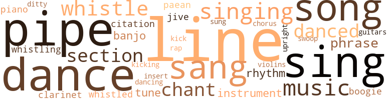
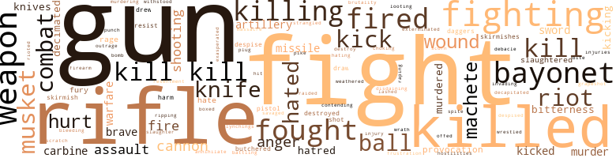

Captain Blackman, by Williams, John A. (1972)
142 music-related terms matched in this text.
Most frequent terms in this topic: line (13); dance (8); sing (8); pipes (7); sang (7)
banjo.n.01
Definition: a stringed instrument of the guitar family that has long neck and circular body
| word | sentence |
|---|---|
| banjo | The hall filled with music , now , the driving , relentless banjo , the comet with its tiny , silvered notes , the clarinet with its bird - like peepings , and the restless piano . |
| Banjos | Banjos and violins echoed down the line . |
| banjo | Griot found a banjo player and danced to his tune , spinning , shaking , sliding , his stocking cap bouncing and whirling on his head . |
boogie.n.01
Definition: an instrumental version of the blues (especially for piano)
| word | sentence |
|---|---|
| boogie | " The 92nd is the only boogie outfit I know of that 's gettin ready for transfer overseas . |
| boogie | They Stuck him with this boogie outfit ; could n't find anyone else who wanted to take it , and he had to or get bumped from the promotion lists . |
chant.n.01
Definition: a repetitive song in which as many syllables as necessary are assigned to a single tone
| word | sentence |
|---|---|
| chant | " I swear by my ancestors , and by the Mother whose name is Africa , to kill with a swift , sure arm , without hesitation , and in revenge for my brothers at Fort Pillow and Poison Springs and wherever else black soldiers are made to die less than the men they are / ' When the oath-taking was finished the chant began like the rustle of leaves in a light wind : No quarter to the Rebels , No quarter when they call , No quarter to the Rebels , Damn them , kill them alll Now , Blackman thought , they could drink hot cow 's blood and shit , and he dreamed back to Africa 's warriors , and forward to 200,000 black Union soldiers who would take the oath and chant the litany ; to the white soldiers caught in the path of the black phalanx who would know that their deaths were no longer neces - sary , but imperative , and understanding that , would tremble when , from outside their walls they heard the chant spring up on the morning wind , the night wind , the noon wind , growing in in - tensity , in pledge : No quarter to the Rebels , No quarter when they call , No quarter to the Rebels , Damn them , kill them alll Mimosa Rogers quickly unlocked the door of her small apartment and nudged it open with an elbow . |
| chant | " I swear by my ancestors , and by the Mother whose name is Africa , to kill with a swift , sure arm , without hesitation , and in revenge for my brothers at Fort Pillow and Poison Springs and wherever else black soldiers are made to die less than the men they are / ' When the oath-taking was finished the chant began like the rustle of leaves in a light wind : No quarter to the Rebels , No quarter when they call , No quarter to the Rebels , Damn them , kill them alll Now , Blackman thought , they could drink hot cow 's blood and shit , and he dreamed back to Africa 's warriors , and forward to 200,000 black Union soldiers who would take the oath and chant the litany ; to the white soldiers caught in the path of the black phalanx who would know that their deaths were no longer neces - sary , but imperative , and understanding that , would tremble when , from outside their walls they heard the chant spring up on the morning wind , the night wind , the noon wind , growing in in - tensity , in pledge : No quarter to the Rebels , No quarter when they call , No quarter to the Rebels , Damn them , kill them alll Mimosa Rogers quickly unlocked the door of her small apartment and nudged it open with an elbow . |
| chant | " Les go Goddamn1 " another answered , and Blackman , caught up in the battle chant , shouted , " Againl " He smiled . |
chorus.n.01
Definition: any utterance produced simultaneously by a group
| word | sentence |
|---|---|
| chorus | A chorus of voices rose in derision . |
clarinet.n.01
Definition: a single-reed instrument with a straight tube
| word | sentence |
|---|---|
| clarinet | The man with the clarinet , long and thin like his instrument , grinned a golden grin . |
| clarinet | The hall filled with music , now , the driving , relentless banjo , the comet with its tiny , silvered notes , the clarinet with its bird - like peepings , and the restless piano . |
dance.n.01
Definition: an artistic form of nonverbal communication
| word | sentence |
|---|---|
| dance | Sing no songs then of safety and democracy and humanitarian - ism ; tell me no crude poems of Kaiser Wilhelm , of German militarism , of Hunnish atrocities ; dance no dances about Verdun ; read me no dispatches of the defeat of the hellish Uhlans . |
| dances | Sing no songs then of safety and democracy and humanitarian - ism ; tell me no crude poems of Kaiser Wilhelm , of German militarism , of Hunnish atrocities ; dance no dances about Verdun ; read me no dispatches of the defeat of the hellish Uhlans . |
| dance | Just as softly he said , " We 're having a dance Saturday night . |
| dances | She 'd never been to one of the dances at the camp . |
| dance | There would be a barbacoa at the dance , he 'd told her . |
| dance | All they do is dance . " |
| dance | Just past the midway point , Benjy and Blackman , on leave together , drifted into a USO dance in Waukegan , having failed everywhere else . |
| dances | I 've even managed to do with Coke at those dances . " |
dance.v.02
Definition: move in a pattern; usually to musical accompaniment; do or perform a dance
| word | sentence |
|---|---|
| dancing | Blackman did n't want to stop dancing with her , and whenever he saw someone ready to cut in , he moved her across the floor . |
dance.v.03
Definition: skip, leap, or move up and down or sideways
| word | sentence |
|---|---|
| danced | Become a diversion to take all the shells the Rebels could throw while the white boys danced in without getting so much as a speck of dust on their shoes ? |
| dance | I 'll see how good you can dance ; I 'll dance you bastards into next Christ - " At the door , they blew him through it . |
| danced | One candidate in his heavy artillery course was pass - ing along well , simply because he sang and danced at the officers ' parties . |
| dance | She 'd rarely heard music that made her know she could dance to it . |
| danced | Soldiers danced with their farm girls ; old men in berets or caps sat smiling toothlessly , and Blackman , the cognac coursing warmly through his body , wanted a woman , any woman , no matter what she looked like , no matter how much like cowshit she might smell . |
| dance | " I could dance with you all night , " he said , and immediately felt foolish . |
| danced | Griot found a banjo player and danced to his tune , spinning , shaking , sliding , his stocking cap bouncing and whirling on his head . |
ditty.n.01
Definition: a short simple song (or the words of a poem intended to be sung)
| word | sentence |
|---|---|
| ditty | The old ditty , learned in Binghamton as a child , kept coming back to Blackman in the truck as it rattled through Kaesong . |
guitar.n.01
Definition: a stringed instrument usually having six strings; played by strumming or plucking
| word | sentence |
|---|---|
| guitars | The guitars were being played inside the train ; the cards were fingered until they were slick . |
insert.n.01
Definition: a folded section placed between the leaves of another publication
| word | sentence |
|---|---|
| insert | For they had come too far to have left anything behind , these priceless but dispensable vanguards for the rich ; and they had to be protected , more or less , as they ventured unwashed , unschooled and uncertain to places where they could finally carve up the land and insert into it their bruised and ragged roots . |
jive.v.01
Definition: dance to jive music; dance the jive
| word | sentence |
|---|---|
| jive | Monkey waxed bold and he jumped up and down , say to the lion , you ol jive-ass clown , If I was n't cool , I 'd beat your ass , too - turkey mothafucka , you jive through and through . |
| jive | " Do n't jive me , man . |
kick.v.04
Definition: kick a leg up
| word | sentence |
|---|---|
| kick | Let 's kick it up to Black fack . |
| kicking | They rambled through the position kicking sleeping blacks or hitting them with their rifles . |
music.n.01
Definition: an artistic form of auditory communication incorporating instrumental or vocal tones in a structured and continuous manner
| word | sentence |
|---|---|
| music | A gentle , patient man , a lover of music , Grierson was fast losing patience as he continued to assess the problems of getting his regiment in combat-ready order . |
| music | The man who held the revolver said , " Avery , a little dancin music . |
| music | She did n't like dancing music , hated cards , roared at the thought of anyone playing dice . |
| music | The hall filled with music , now , the driving , relentless banjo , the comet with its tiny , silvered notes , the clarinet with its bird - like peepings , and the restless piano . |
| music | She 'd rarely heard music that made her know she could dance to it . |
| music | Smoke rose above the lines like signals ; whoops and hollers could be heard , and music ; dancers among the Indians , pirates , backwoods - men and even the dragoons could be seen from where the blacks were camped , as well as from the windows of Jackson 's quarters . |
musical_instrument.n.01
Definition: any of various devices or contrivances that can be used to produce musical tones or sounds
| word | sentence |
|---|---|
| instrument | White men who say they came to help us in the Agency are another instrument of our destruction . |
| instrument | The man with the clarinet , long and thin like his instrument , grinned a golden grin . |
| instrument | Oh , yeah , we ran that down for a long time , without once realizing what the enemy always knew : the most basic instrument of warfare was possession of terrain from which to either launch an attack or to fight a defensive action . |
paean.n.02
Definition: (ancient Greece) a hymn of praise (especially one sung in ancient Greece to invoke or thank a deity)
| word | sentence |
|---|---|
| paean | Sing me instead , a paean of blackness . |
| paeans | They sang with great tenderness , and as their voices curled back through the hills , the " Internationale " surged forth with a muffled might , and " La Marseillaise " ; other songs , in English , German , Catalan , Spanish , Polish , were lofted into the air , and Blackman wondered at these paeans and wished his eyes could water at them ; for he knew that here , at least this night , this moment , it was all right again , whatever happened tomorrow . |
phrase.n.02
Definition: a short musical passage
| word | sentence |
|---|---|
| phrase | Every phrase from every man in the company began : " When I get back home . . . . " And Blackman thought : Now they make their plans , each wanting to believe that home 'll be dif - ferent because they came here , because they carried arms . |
| phrases | He had to see about the Captain while he could to settle the phrases and ideas flitting through his head . |
| phrases | Oh , that rappin ; oh , them empty phrases ; oh them sacrificial lambs . |
| phrases | Now , suppose we just moved our people over there , not as soldiers in the strict sense , and became twenty-five inter - locking colonies , learning languages and dialects and truly be - coming one with the people , Brothers and Sisters without the bullshit phrases . |
piano.n.01
Definition: a keyboard instrument that is played by depressing keys that cause hammers to strike tuned strings and produce sounds
| word | sentence |
|---|---|
| piano | In town now , Harrison dismounted and tied up before Nas - worthy 's Saloon ; he could hear the piano from the street . |
| piano | The hall filled with music , now , the driving , relentless banjo , the comet with its tiny , silvered notes , the clarinet with its bird - like peepings , and the restless piano . |
pipe.n.04
Definition: a tubular wind instrument
| word | sentence |
|---|---|
| pipes | There were laundresses assigned to each detachment , usually tough old black women who smoked pipes and had muscles as large as the men . |
| pipe | Harrison pulled on his pipe he brought out of his boot top . |
| pipe | Little David Harrison had lit his pipe . |
| pipes | A distance away from the black men a group of farmers , also sitting around a fire of heat-giving coals , smoked their pipes and tried to think of the morrow when the British would surely come . |
| pipes | The farmers puffed their pipes and thought of seeding . |
| pipes | One by one the other farmers peeked out beyond the bowls of their pipes at him and said nothing . |
| pipe | Dinner would be quick , perhaps leftovers , and they 'd all retire to their porches to sit and rock and exchange the news of the day , pausing to hail the occasional passer-by out strolling in a clean shirt and trousers , perhaps smoking a pipe , and perhaps with some loving mongrel hound tic-clitting on the walk beside him . |
| pipes | By midmoming the Colonials heard the pipes distantly , carried on a warming wind . |
| pipes | Like the others , he heard the pipes , but for the moment the road was enclosed in thin green . |
| pipes | The Americans could hear their pipes and drums . |
| pipe | He clicked his clay pipe against his teeth . |
| pipe | She 'd walk about with that fine feminine grace large women possess , that grace they were forever conscious of wanting to have - and had because they were n't small - " Sure could use a quarter section , " Black Antoine said , and Blackman came out of his reveries to see him chewing nerv - ously on his pipe . |
quotation.n.02
Definition: a passage or expression that is quoted or cited
| word | sentence |
|---|---|
| citation | He reached for the citation . |
| citation | Mimosa folded the medal and cord and ribbon together with the citation , and put them in the leather box they 'd come in . |
rap.n.05
Definition: genre of African-American music of the 1980s and 1990s in which rhyming lyrics are chanted to a musical accompaniment; several forms of rap have emerged
| word | sentence |
|---|---|
| rap | We had to rap him one . " |
rhythm.n.04
Definition: the arrangement of spoken words alternating stressed and unstressed elements
| word | sentence |
|---|---|
| rhythm | We went out of our way to make him look good , to help him , Blackman thought , his mind now settling to the rhythm of the train . |
| rhythm | and she had her first orgasm through which she felt him stroking and kissing until she became aware of him again , sharply , and then fell into his rhythm of slow , insinuating movements , and she came again , tearing away from his lips in panic , afraid she was unable to ever again take in a breath of air , and not finishing that because his hand , holding her chin , brought her mouth back to his . |
| rhythm | The silence out there seemed to have a rhythm , a cadence - The wind shifted and for a moment , through the opening that appeared in the fog , Blackman saw them coming across the cane field , a phalanx of bright color against the gray cloud that 'd concealed them . |
section.n.01
Definition: a self-contained part of a larger composition (written or musical)
| word | sentence |
|---|---|
| section | They entered the white section warily . |
| section | They walked without touching , although he wanted very much to touch her , glancing across the Amo at the old section , allow - ing their eyes to skip quickly over the bridges that 'd been blown up . |
| section | He thought then of a quartet section . |
| section | " Git me dat quahtah section n sell it . |
sing.v.02
Definition: produce tones with the voice
| word | sentence |
|---|---|
| sing | " Maybe the difference , Little David , is that I kill because I have to - " Little David smiled , the same kind of smile Blackman observed he smiled when he was ready to sing one of his favorite songs . |
| sing | And Little David could sing . |
| sang | From here , Blackman mused , the master must 've given his orders , or at night listened as they sang , if they sang . |
| sang | From here , Blackman mused , the master must 've given his orders , or at night listened as they sang , if they sang . |
| sing | And Harrison had a good sing - ing voice , Grierson recalled ; he was blessed . |
| sing | They could have band concerts and Sergeant Harrison could sing . |
| sing | They 'd made her mattress of dried leaves and grass and comshucks sing and whimper , had raised that good funk up from between them . |
| sang | " They got im and they 're on the way in , Major Whittman , " Faulkner , the radioman , sang out as Whittman re-entered the CP . |
| sing | And Grierson was confident then , so much so that for seconds at a time his eyes grew wet , that the Army would one day soon sing of these black men and their bravery , and take them to its bosom without reserva - tion for , even excluding the Civil War in which they 'd done well , they 'd been outstanding in this no man 's land . |
| Sing | Sing no songs then of safety and democracy and humanitarian - ism ; tell me no crude poems of Kaiser Wilhelm , of German militarism , of Hunnish atrocities ; dance no dances about Verdun ; read me no dispatches of the defeat of the hellish Uhlans . |
| Sing | Sing me instead , a paean of blackness . |
| sang | One candidate in his heavy artillery course was pass - ing along well , simply because he sang and danced at the officers ' parties . |
| sang | There they drank wine , cognac - whatever was drinkable and would n't kill them , and they sang : The cracker marines went over the top , parlay voo ; the cracker marines went over the top , parlay voo ; the cracker marines went over the top because at them us black boys shot , inky , dinky , parlay voo . |
| sang | Or they sang , wallowing in sentimentality , " The Old Mill Stream , " and " Madelon " or frolicked through " Wo n't You Please Come Home , Bill Bailey . " |
| sung | The " Internationale , " already sung weakly , was going to be weaker . |
| sing | Some slept as they walked ; some tried to hum or sing , but , finally , they shuffled along in silence , buffeting wearily against the night , and fearful that dawn would find them still on the road , exposed to Rebel guns . |
| singing | It was coming from across the river , where the Garibaldis were ; they were singing " II Piave Mormorava , " about the great battles in northern Italy in World War I and the deaths of dedicated men . |
| sang | They sang with great tenderness , and as their voices curled back through the hills , the " Internationale " surged forth with a muffled might , and " La Marseillaise " ; other songs , in English , German , Catalan , Spanish , Polish , were lofted into the air , and Blackman wondered at these paeans and wished his eyes could water at them ; for he knew that here , at least this night , this moment , it was all right again , whatever happened tomorrow . |
| sing | Man , they sing about soldiers ; give them land . |
singing.n.01
Definition: the act of singing vocal music
| word | sentence |
|---|---|
| singing | They were almost under the walls now and down from them poured Rebel fire , grape and ball , all singing and humming wildly as they slashed through flesh and bone . |
| singing | Blackman heard the grenades go off and listened for the singing fragments . |
| singing | Abraham Blackman , once back at Riley , knew that singing and concerts could only help relieve the monotony of garrison duty so much , then no more . |
| singing | Like these men singing into the night , their songs dying like sighs as the Internationals moved toward the Ebro , the oars of their boats already muffled . |
| singing | The record playing was a Lucky Millinder side , Sister Rosetta Tharpe singing . |
song.n.01
Definition: a short musical composition with words
| word | sentence |
|---|---|
| songs | " Maybe the difference , Little David , is that I kill because I have to - " Little David smiled , the same kind of smile Blackman observed he smiled when he was ready to sing one of his favorite songs . |
| songs | Sing no songs then of safety and democracy and humanitarian - ism ; tell me no crude poems of Kaiser Wilhelm , of German militarism , of Hunnish atrocities ; dance no dances about Verdun ; read me no dispatches of the defeat of the hellish Uhlans . |
| song | Behind him , some of the men broke out in song : " Over There . " |
| songs | They sang with great tenderness , and as their voices curled back through the hills , the " Internationale " surged forth with a muffled might , and " La Marseillaise " ; other songs , in English , German , Catalan , Spanish , Polish , were lofted into the air , and Blackman wondered at these paeans and wished his eyes could water at them ; for he knew that here , at least this night , this moment , it was all right again , whatever happened tomorrow . |
| songs | Like these men singing into the night , their songs dying like sighs as the Internationals moved toward the Ebro , the oars of their boats already muffled . |
| song | He could n't remember , but now Ellington 's song , complete with the full - bodied riffles of the sax front line , jumped into his consciousness . |
| song | Blackman walked through the slowly parting ranks of the whites and followed McGruder to his tent , thinking of the song he wished to shout at them : The rebel clowns , ah what a sight , Too awkward was their figure , ' Twas yonder stood a pious wight And here and there a nigger . |
| songs | And the Hessians , dulled with hot food and drink , Christ - mas songs still ringing in their sleep-deadened minds , capitulated quickly and watched the ragged horde pour into their barracks . |
| song | As he went he hummed a song that came to mind : We had an Army , twenty thousand men , Five thousand were niggers , Oh , say that again - We had an Army , twenty thousand men , Five thousand were niggers - Stopl Do n't say it again . |
swoop.n.01
Definition: (music) rapid sliding up or down the musical scale
| word | sentence |
|---|---|
| swoop | Over in a slow , heavy arc the statue came until , for a moment suspended by the force of those at the ropes and bars and its own weight , horse and rider gave a little swoop through the air , described a small arc , then crashed to the ground . |
tone.v.01
Definition: utter monotonously and repetitively and rhythmically
| word | sentence |
|---|---|
| chant | " I swear by my ancestors , and by the Mother whose name is Africa , to kill with a swift , sure arm , without hesitation , and in revenge for my brothers at Fort Pillow and Poison Springs and wherever else black soldiers are made to die less than the men they are / ' When the oath-taking was finished the chant began like the rustle of leaves in a light wind : No quarter to the Rebels , No quarter when they call , No quarter to the Rebels , Damn them , kill them alll Now , Blackman thought , they could drink hot cow 's blood and shit , and he dreamed back to Africa 's warriors , and forward to 200,000 black Union soldiers who would take the oath and chant the litany ; to the white soldiers caught in the path of the black phalanx who would know that their deaths were no longer neces - sary , but imperative , and understanding that , would tremble when , from outside their walls they heard the chant spring up on the morning wind , the night wind , the noon wind , growing in in - tensity , in pledge : No quarter to the Rebels , No quarter when they call , No quarter to the Rebels , Damn them , kill them alll Mimosa Rogers quickly unlocked the door of her small apartment and nudged it open with an elbow . |
tune.n.01
Definition: a succession of notes forming a distinctive sequence
| word | sentence |
|---|---|
| lines | Sharply the bugles sounded the charge and the men , as though stung , leaped forward again , straightening their lines , bending them forward this time , and they burst into a clearing where some of the Rebel cannon had been fixed , firing at the gunners as they tried to escape . |
| line | Blackman found himself running almost alone ; the first line had been decimated . |
| line | Tire next room , the dining room with its long line of buffet chests and china closets , tables and velvet-covered chairs was a shambles . |
| line | Approaching five , the sky lightened and the regiments were back on line , tense . |
| lines | Forward they went , the blue lines , into a gorge thirty feet deep , Blackman estimated from where he stood , sixty feet wide and over a hundred and fifty feet long . |
| tunes | In the back sat a young white woman , unbent by the for - tunes of war , although her man was nearly in rags and her own clothing desperately but neatly arranged . |
| lines | Those long lines of covered wagons filled with weary , frightened men and juiceless women and mewling babies who believe their god better than our Manitou will fasten the gate on the reservation . |
| line | Take Colonel Greer , in line for his first star . |
| tune | The people on the dock began to clap ; the band broke into another , stirring , rapid-paced tune , and the officials , smiling , stepped out of the warm offices and lined up . |
| line | Once in a while a laugh broke out as someone recalled Boston 's inflection , or a line , and it would initiate another flurry of laughter and " Oh , gods . " |
| line | So he joined the others who were making their way from the cellar across fields to a barn where they found a line of soldiers . |
| line | Blackman got on line , conscious of the silence of the men standing there ; it was like the silence of the vast , communal shithouses you had to get used to in the Army . |
| line | Up ahead , just barely visible through the rain he saw the Rebel barbed wire , curling back upon itself , curling down a line that went up and down hills and depressions . |
| lines | The war was all but over if they cut the Republicans ' lines . |
| Lines | Lines were forming in the passageway to the latrine , each man seeming to be unaware of the many others with the same problem . |
| line | Soon , too soon , Blackman found himself moving in a line , climbing the steep steps to the upper deck , where the cool sea air whipped around wisps of cordite . |
| line | Framed in flowers ( oh yes , the ceremony 's soon ) her strong face revealed every bone and line , every curve and angle . |
| line | That was always your line , Abe . |
| line | He spat tobacco at one of the paddy fields the long line of trucks was racing past . |
| line | Grippe went through the ranks like the indiscriminate curving of a scythe , and men dropped out of line , their lungs flooding with snot , but were replaced by men thought to have been captured in New York , blacks among them . |
| lines | Blackman squeezed again , saw the smile lines around the General 's eyes and mouth waver , his eyes question , then he released him . |
| tune | Griot found a banjo player and danced to his tune , spinning , shaking , sliding , his stocking cap bouncing and whirling on his head . |
| lines | The British marched on , tread unbroken , their lines only slightly bent . |
upright.n.02
Definition: a piano with a vertical sounding board
| word | sentence |
|---|---|
| upright | It seemed that the British were falling back , and around him the farmers were coming out from cover , standing upright to fire . |
violin.n.01
Definition: bowed stringed instrument that is the highest member of the violin family; this instrument has four strings and a hollow body and an unfretted fingerboard and is played with a bow
| word | sentence |
|---|---|
| violins | Banjos and violins echoed down the line . |
whistle.n.01
Definition: the sound made by something moving rapidly or by steam coming out of a small aperture
| word | sentence |
|---|---|
| whistles | The whistles blew for a counterattack . |
| whistles | They heard whistles and shouts and started back on the run and joined the battalion already trotting to prepared positions . |
| whistles | Then there were whistles and shouts of authority . |
whistle.v.01
Definition: make whistling sounds
| word | sentence |
|---|---|
| whistle | Blackman pursed his lips in a silent whistle . |
| whistle | Damn near clean as a whistle . |
| whistling | The ground flew under Blackman 's feet ; he hurled a bramble of barbed wire and slipped , went down , grateful to be somewhat out of the reach of things snapping , crackling and whistling in the air , two or three feet above him . |
| whistled | Fragments hummed and whistled and snarled through the air , a wave of earth sprayed up against the purpling sky and rained back to the surface . |
| whistled | To Blackman at first it felt like riding a small vessel in a rough sea ; the earth heaved and bucked ; fragments whistled and whizzed snappingly through the air . |
| whistling | He left , whistling . |
649 violence-related terms matched in this text.
Most frequent terms in this topic: fight (59); guns (38); gun (36); kill (31); rifle (30)
abrasion.n.01
Definition: an abraded area where the skin is torn or worn off
| word | sentence |
|---|---|
| scratch | The other companies and squads would continue to pacify the Indians , drive out boomers , catch whiskey peddlers , escort stages , wagon trains , carry mail , and the most luckless of them would wind up at Medicine Bluff to build an entire regimental post from scratch . |
aggravation.n.02
Definition: unfriendly behavior that causes anger or resentment
| word | sentence |
|---|---|
| provocation | Now came the teasing of Felson with his jello-ish buttocks ; Benjy 's head was lumpy with the conk gone ; Flash had teamed with another youth named Tisdale and became known ( among the more bold ) as the Gold Dust Twins ; Big Dick was from Bamberg , South Carolina , and he had one , and would throw it upon one of the tables on the slightest provocation ; he claimed he could n't shoot straight on the firing range because it got in his way . |
| provocation | " America has said it will not ever be the first country to use the atomic bomb " Are you saying we wo n't use it , or we wo n't use it without provocation ? " |
| provocation | " That would depend , would n't it , on the degree of provocation , and the degree of threat to any land or sea forces we might have to send into any given place ? " |
| provocation | Another voice : " You seem to be saying , cdthough you have n't spoken the words , that given enough provocation , China might become involved enough so that we could then drop the bomb and our people would accept our reasons . |
anger.n.01
Definition: a strong emotion; a feeling that is oriented toward some real or supposed grievance
| word | sentence |
|---|---|
| anger | Blackman smiled with relief , then his anger came . |
| anger | Without anger the Indian said , " I see the end of the Indian people . |
| anger | Some of the soldiers had tears in their eyes and Blackman hoped they were tears of anger . |
| anger | Men hoped and were ready to die for other men as Shango had risked the anger of the gods to bring fire from the heavens to men ; such men must be punished . |
| anger | Three white soldiers in fatigues pummeling to the ground a black soldier who , even now was struggling to get up from the ground , his face in an appeal , mixed with anger . |
| Anger | Anger . |
| anger | Dr. Jackson saw the anger and faced it coolly . |
| anger | " Yes , you bastard , " she said without anger as she started to cry . |
battle.v.01
Definition: battle or contend against in or as if in a battle
| word | sentence |
|---|---|
| battling | A colonel with only the American Theater and the Good Conduct ribbons on his blouse addressed them : " While many of you have been actually fighting , we of the Army Research Branch 've been battling in our own modest way . |
bayonet.n.01
Definition: a knife that can be fixed to the end of a rifle and used as a weapon
| word | sentence |
|---|---|
| bayonets | Whenever black men and white men locked in fearful , angry embrace , the terror of ugly death struck at both sides ; when the balls ran out , they charged with bayonets . |
| bayonets | Behind their line of march the traded atrocities became legend : prisoners shredded by bayonets ; prisoners decapitated ; prisoners castrated ; prisoners pulled asunder by horses . |
| bayonet | They 're afraid , too , Blackman thought , as he blew the head off a whiskered man who 'd thrust himself forward on the walls ; out of the comer of his eye he saw Little David ram his bayonet into the face of another Rebel , where it stuck , and saw the face disintegrate when Little David pulled the trigger . |
| bayonets | Punctured him with their bayonets ? |
| bayonets | But the - white troops mistook the hesitation for stubbornness and opened fire and charged with bayonets . |
| bayonet | Those moments past , he thrust himself up from under the pounding feet and battered his way forward with butt , bayonet and fist , his men with him , and as he emerged from the darkness into the bright light , he saw , ringed all around the Crater , Rebels firing at point-blank range . |
| bayonets | The helmets on their heads made them appear as tall as giants , and their muskets with bayonets fixed seemed five feet long . |
| bayonet | Hell , the bayonet on these Lebels is the longest one in the world , certainly longer than the machetes . " |
| bayonets | Black boys he knew , but could n't somehow recognize now , rushed past him , screaming , firing , their bayonets , long , slender knives of dull gray metal pointed at the Germans . |
| bayonets | He saw them as the Germans must 've seen them , khaki uniforms , blue helmets , French rifles and bayonets , shouting Harlemese . |
| bayonet | Ready again , Blackman aimed at a phalanx of Redcoats who were making bayonet raids . |
| bayonet | He got his man , saw him spin backward , jabbing his bayonet into the ground . |
| bayonets | Both knew that Springhall would give his usual brief talk , that the new men would get Remingtons , bayonets and cartridge belts , and each would fire five rounds into a nearby hillside . |
| bayonets | The Ameri - cans unleashed weak lightning , but the Redcoats , bayonets at the ready , kept charging , on the run now ; they swept to the edge of the breastworks and Blackman was swinging at them with the butt of his gun when the call came to retreat . |
| bayonets | The steep slope at their backs proved no obstacle ; the Ameri - cans , those who escaped the bayonets , fled up the hill or down its slopes , Blackman and Salem among them . |
| bayonet | ( Holler when you throw that bayonet in , HOLLER ! ) |
| bayonet | Blackman walked easily , scarely feeling the awkward sharpness of the old bayonet he had tucked in his pants . |
| bayonet | He lashed out with fist and bayonet . |
bleeding.n.01
Definition: the flow of blood from a ruptured blood vessel
| word | sentence |
|---|---|
| bleeding | A soldier next to Blackman , his face split and bleeding , shouted , " Cracker bastards tried to cut in on me on the line , three of crn , like I was n't nothin - " " Shut up in there ! " a lieutenant shouted . |
bombard.v.02
Definition: throw bombs at or attack with bombs
| word | sentence |
|---|---|
| bomb | From the other side of the room came a question : " Do you suggest that we bomb them now ? " |
box.v.03
Definition: engage in a boxing match
| word | sentence |
|---|---|
| boxed | He became a welter-weight prizefighter and boxed in England , France and North Africa . |
brush.n.06
Definition: a minor short-term fight
| word | sentence |
|---|---|
| skirmishes | Although the regiment had been involved in several skirmishes , Grierson knew there was more to come , and it would come as the rails pushed the redman further and further to the walk Colonel Grierson fretted that so much time was spent on escorting stage coaches , protecting rail gangs , scouting and pro- tecting trains . |
| skirmish | Blackman could n't believe it , therefore , when the Rough Riders , behaving for all the world as though they 'd won the skirmish , came to the regimental ground to allow the Buffaloes to drink from their canteens , be - cause they were " bully , " and regular fellows , even if they were - you know . |
| skirmish | Another cry sent them into a smooth flowing skirmish line . |
| skirmishes | It seemed to him to be a natural graveyard , capable of holding millions , and already , with the skirmishes that had taken place on these hills of widows , oqjhans and sweethearts , the valleys no longer smelled of sun-scorched earth , olives or grapes , but of bodies rotting in the summer heat ; the stench was so thick he could almost see it . |
butcher.v.01
Definition: kill (animals) usually for food consumption
| word | sentence |
|---|---|
| slaughtered | But out here , along this Mississippi and a thousand other places black men were eager to let themselves be slaughtered because they believed in the sudden goodness of those who 'd oppressed them for over two centuries . |
| slaughtered | The 10th pinched the Indians against the Washita to await the arrival of Custer 's forces which were to lead them to a reservation ; instead the 7th slaughtered them , men , women and children . |
| butchered | Blackman shifted to the wagons , listened to their creaking wheels for telltale sounds of imminent failure , to the thinning oxen for signs of last life so they could be killed and butchered for food . |
| butchered | Him , the one who pulled the oxen , lifted wagons out of ruts , pushed the fieldpieces , butchered the oxen . |
| slaughtered | As if on some crude con - veyor , they marched up to the dry canal and down into it and were slaughtered as they started up the other side . |
cannon.n.04
Definition: heavy automatic gun fired from an airplane
| word | sentence |
|---|---|
| cannon | Sharply the bugles sounded the charge and the men , as though stung , leaped forward again , straightening their lines , bending them forward this time , and they burst into a clearing where some of the Rebel cannon had been fixed , firing at the gunners as they tried to escape . |
| cannon | The battle seemed far away , and then in panic , he began to kick and struggle to the surface , nearer the sound of rifle and cannon and shouts . |
| cannon | The Rebels had n't been destroyed ; their own guns were working , mortar , cannon and rifle , and he could see the blue lines bunching , slowing , like syrup continuing its reluctant flow when the jar 's been tipped back . |
| cannon | " This is our 75-millimeter cannon , this is our new 155-millimeter job . |
| cannons | Out of the night , then , slipping on rag-wrapped feet , the touchholes of their muskets frozen , the Colonials took out the Hessian pickets and poured into Trenton under the cover of barrages of grapeshot from cannons from which the ice had been dug , killing and capturing with the jerking movements of men whose hot emotions could not match the stiffness of their bodies . |
| cannon | As dusk closed with night he heard the cannon from the Carolina booming , seeking out the British squadron , and hurrying herself with half the as - signed American force into position to trap the Redcoats . |
| cannon | Jackson , too , had seen them and rapidly called out his orders and with satisfaction saw his firing rows assume their positions and the cannon crews ready to light the touchholes of their guns . |
carbine.n.01
Definition: light automatic rifle
| word | sentence |
|---|---|
| carbine | Taking the carbine from its holster , he walked up the steps and through the door . |
| carbine | Blackman smashed him in the head with his carbine and as he fell , Big Helga laughed . |
| carbine | He was tossing the clip from his carbine up and down when the phone rang . |
| carbine | Whittman took his carbine and they entered the swamp . |
| carbine | Once Blackman turned quickly and Whittman jumped and raised his carbine . |
contemn.v.01
Definition: look down on with disdain
| word | sentence |
|---|---|
| despise | She would not have her officer to console her ; he would despise her ( yet in some strange way , perhaps , desire her all the more , outside the bonds of marriage ) . |
| scorn | Eighteen years altogether of horseshit , ass blisters , bad food ; of guarding the white man 's rail - road , escorting his families , chasing Indians for him and some - times killing them ; of incompetent captains and lieutenants , laughter and scorn from white soldiers - except when you saved them from being castrated or scalped . |
| despised | At the end of that week , although everyone said they despised the Army , Blackman noticed that they were glad , even eager enough to get their uniforms , and as if that were not enough when they began company drill , they strutted , Blackman with them , as if every simple drill on the stubbled field was being attended by a thousand girls , parents and guys who were too sick , from one thing or another , to have been drafted . |
| disdaining | " Yes , " she said curtly , disdaining even to look at the blonde who was smiling sympathetically at her , but she could not help but see the rather pudgy black hand clap the white-garmented shoulder of the blonde as he swept out of the office . |
| despise | Your love of honor would cause you to despise the men who would attempt to deceive you . |
contend.v.06
Definition: be engaged in a fight; carry on a fight
| word | sentence |
|---|---|
| Contending | " Contending among ourselves . " |
dagger.n.01
Definition: a short knife with a pointed blade used for piercing or stabbing
| word | sentence |
|---|---|
| Daggers | Daggers of orange flame licked and jabbed viciously at the silvering sky ; misshapen objects , men and materiel rose slowly and with an awful majesty into the sky , as if to display and complain of the suddenness , without warning , of their shatter - ing . |
| daggers | Flashes of red and crooked daggers of black smoked marked the first volley . |
decapitate.v.01
Definition: cut the head of
| word | sentence |
|---|---|
| decapitated | Behind their line of march the traded atrocities became legend : prisoners shredded by bayonets ; prisoners decapitated ; prisoners castrated ; prisoners pulled asunder by horses . |
defy.v.01
Definition: resist or confront with resistance
| word | sentence |
|---|---|
| withstood | They encountered numerous Moors on the Rebel side , withstood a new German bomber , the Stuka , saw the tough Franco-Belgian Brigade , all but wiped out , recross the Ebro only twenty-four hours after they 'd started the attack . |
destroy.v.04
Definition: put (an animal) to death
| word | sentence |
|---|---|
| destroyed | The Rebels had n't been destroyed ; their own guns were working , mortar , cannon and rifle , and he could see the blue lines bunching , slowing , like syrup continuing its reluctant flow when the jar 's been tipped back . |
| destroy | As Blackman rejoined his regiment , the Virginia landscape was beginning to fill with Union soldiers , all black , and he marveled at this , passing through unit after unit , and saw in this gathering of black death the awesome vengeance of the North ; Ethiopia finally unleashed to destroy her captor ; and after battles , skirmishes , actions , expeditions ; after reconnaissances , operations , affairs and demonstrations ; after engagements , raids , sieges and assaults , expeditions , attacks and captures , he learned but would not believe , that the XXV Army Corps had been formed . |
| destroyed | In the brown-blue mountains of Saragossa and the Santa Rosas they caught up with the Indians and methodically destroyed them and their villages and returned to base after almost a year in the field . |
draw.v.23
Definition: pull (a person) apart with four horses tied to his extremities, so as to execute him
| word | sentence |
|---|---|
| draw | The ist Volunteers , the Rough Riders , attracted a lot of attention because of their colonel , and they became over - bearing and arrogant without cause , even when the 10th , with heavy loss in officers - Shipp , Smith , Mills and Ord - had to rescue them with a charge to draw fire away from them on El Caney . |
| drew | Oliver Law , his face sagging , drew up beside Blackman . |
| drew | All eyes swept the group of ragged blacks , then drew up to Blackman . |
| draw | Bitterly now he wondered what would 've happened had he not stood up to draw fire . |
eliminate.v.03
Definition: kill in large numbers
| word | sentence |
|---|---|
| decimated | Blackman found himself running almost alone ; the first line had been decimated . |
| decimated | For four hundred and fifty years they had been decimated by the slave trade that initially provided European wealth , lifted it from its dark and middle ages . |
| decimated | The Brotherhood was being decimated in the hills of Brunete . |
| annihilate | Defensive action to annihilate the Aggressor Armies will commence at once . |
| decimated | If they could n't handle a night attack , God knows they would n't stand atop ramparts in broad daylight , and if he lost them and the British squadron did make it into New Orleans , no great harm done , for it would have to be followed and supported by more troops which Jackson was sure he could stand off , if his least prepared fighters were decimated . |
exterminate.v.01
Definition: kill en masse; kill on a large scale; kill many
| word | sentence |
|---|---|
| exterminated | We 'll be exterminated trying to hold on to a small part of it . |
ferociousness.n.01
Definition: the trait of extreme cruelty
| word | sentence |
|---|---|
| brutality | A man , Blackman thought , known for brutality and ruthless - ness . |
fight.n.02
Definition: the act of fighting; any contest or struggle
| word | sentence |
|---|---|
| fighting | He always marveled at the quiet that hovered over battlefields after the fighting . |
| Fighting | Fighting words , Blackman knew , in any other place , at any other time . |
| fighting | Next to nothing ; they just ran to the fighting for the glory , the honor . |
| combat | For a moment it was clear to Blackman that none of the assignments were worth a damn ; that all of them would wind up in the Services of Supply , not in combat . |
| combat | At present , such a move would have serious consequences : in fact , two of those regiments form part , as combat units , of a French division , while the other two are similarly as - signed to two of our divisions . |
| combat | After thus bringing the facts to your attention , I feel sure that you will agree with me that any change made this day in the employment of the colored regiments of the American 93rd Division , which have been trained and used as combat units , would have unfortunate consequences . . . . |
| combat | We are n't going to have that many combat troops that 're colored . |
| combat | Some to service outfits " - and here Blackman saw Benjy smile - " and some to the combat outfits . |
| fighting | His labor and fighting in exchange for her freedom . |
| combat | We can give this man some training - he 's already had combat infantry - and have him ready by the time those boys leave Huachuca . " |
| combat | The new '' opportunity to volunteer " extended " to all soldiers with * out regard to color or race , but preference will normally be given to individuals who have had some basic training in in - fantry . . . . " The second paragraph , Blackman noted , was pure sliding on shit : " In the event that the number of suitable negro volunteers exceed the replacement needs of negro combat troops , these men will be suitably incorporated in other organizations so that their service and their fighting spirit may be effectively utilized . " |
| fighting | The new '' opportunity to volunteer " extended " to all soldiers with * out regard to color or race , but preference will normally be given to individuals who have had some basic training in in - fantry . . . . " The second paragraph , Blackman noted , was pure sliding on shit : " In the event that the number of suitable negro volunteers exceed the replacement needs of negro combat troops , these men will be suitably incorporated in other organizations so that their service and their fighting spirit may be effectively utilized . " |
| combat | White troops having been in combat more often , get more points , and they are coming home . |
| combat | The black troops , with fewer points , for less combat , are remaining - " But the room was exploding around him . |
| combat | We just do n't know if we could put a functioning service into combat against the Soviets , the Chinese or anybody else at this moment because of our racial problems . " |
| combat | In war , like in individual combat , a cat more powerful than you can defeat himself by having too much momentum , which does n't allow him to stop to protect himself when he chooses too . |
fight.n.05
Definition: a boxing or wrestling match
| word | sentence |
|---|---|
| fight | Each battle became a fight not for land or victory , but for survival . |
| fights | There were fights , but they were to be expected . |
| fight | A man could always get lost in the field or let it be thought that he 'd been captured during a fight with the Indians . |
| fight | Can you niggers fight ? |
| fight | Itching to get into the fight over there . |
| fight | " So , the way I figure it , Captain-Brother , to be caught up in all that shit , whether he dug what he was doin or not , and gettin drilled five times and still comin out alive , now that 's a bad dude , an ca n't nobody fight with that . |
| fight | The same success which followed the glorious fight for the cause of liberty is sure to crown our common effort now and bring about the final victory of right and justice over barbarity and oppression . |
| fight | Black - man and Salem fired until their cartridges were gone , but still followed the fight , all the way into Charles Town . |
| fight | This was good news , for the Negroes were fight - ing back . |
| fight | The fight was on and Blackman remembered clubbing him into the ground with his fists and loving it , but at times recoiling from the burning hatred in the blue eyes . |
| fight | " Fur a fack , now dey might even join togedder t git rid o niggers so dey kin fight in peace . " |
| fights | But old acquaintances , long dead , some washed overboard in rough seas , others murdered in knife fights in ports halfway around the world ; these had perceived the cunning that lay behind the flatness of his yellowed eyes . |
fight.v.02
Definition: fight against or resist strongly
| word | sentence |
|---|---|
| fought | Behind the rows of black troops , he knew that the generals , Banks and Ullman , were there , anxious to see how black troops fought , eager to spread the word of the success or failure of the Emancipation on this one battle . |
| fought | They flashed ahead and seeing no place to pass , collided with the retreating white troops who fought , clawed and cursed their way past . |
| fought | But when he rose and fought and killed , the whole nation with one voice proclaimed him a man and brother . |
| fight | Gentlemen , taking the lesson from our British cousins , we 're merely employing one group of natives , the niggers , to fight an - other group of natives , the Indians . |
| fight | As if they were n't listening to him , Cato said , " They 've offered us our freedom , if we fight . |
| fighting | So , we 're fighting . |
| fight | A horseman made himself a drinking ring , a horseshoe nail bent in a circle with the head up , to fight with , and until its newness was dated with a little head-blood , it was n't a real drinking ring , and you were n't really a cavalryman . |
| fight | You black people who have nothing , who let yourselves be dragged from far , far lands in chains , and who 've believed , really believed that the white god was also your god , will survive us , multiply because you do not fight , will not fight the white man . " |
| fight | You black people who have nothing , who let yourselves be dragged from far , far lands in chains , and who 've believed , really believed that the white god was also your god , will survive us , multiply because you do not fight , will not fight the white man . " |
| fight | " Even so , one day you will want more than to be left alone ; one day you 'll tire of the white man killing you one by one , like stragglers in a buffalo herd , and you 'll fight . |
| fighting | Who else would be out here fighting a thousand battles over thousands of square miles but men who had nothing else to do and no place else to go ? |
| fighting | While they were in the ration line , humbly getting their supplies and therefore pledging allegiance to the white man , some of them were still out there fighting . |
| fight | Kin you niggers fight ? " |
| fight | They gained the shore where they were to fight as dismounted cavalry . |
| fighting | Was America fighting for the blacks , the mestizos , or those " pure " Spaniards who wanted to be free of Spain so they could run the country , keep all the profits themselves ? |
| fought | It did n't matter that he 'd fought with many of them in Cuba . |
| fighting | Recruited as fighting men , in ridicule ; trained and mustered into Federal service , in more ridicule ; sent to France as a safe political solution of a volcanic political problem ; loaned to the French Army as another easy way out-these men had carried on . |
| fighting | The war was laughable in a tragic way ; the Europeans wen fighting for very little in Europe . |
| fought | Back in Africa itself , black men fought other black men , all led by whites who spoke German , English , French , Italian and Airikaans . |
| fight | They 're going over first to sweep off the docks in France so white men can fight . " |
| fighting | It was December 27 , 1917 , and an entire shipload of American fighting men had arrived . |
| fight | Let them fight , let them fight . |
| fight | Let them fight , let them fight . |
| fight | But the divisional consensus was , if the French can fight with these weapons , so could they ; if French wore those funny blue helmets , so could they . |
| fight | "' The Germans will fight you bullet for bullet , but will break and run before the steel . ' |
| fighting | He wondered if the Ger - mans were trying for a coup de main , as the French called it , when they raided for prisoners to find out who was fighting in front of them . |
| fight | The sons of the soldiers of Lafayette greet the sons of the soldiers of Washington who have come over to fight , as in 1776 , in a new and greater way of inde - pendence . |
| fight | They 'd fight even better with us ; they 're Americans1 " " Hah ! " |
| fight | Such ideas were utterly alien to the men and represented , in essence , the enemy they had come so far to fight . |
| fight | Blackman smiled ; of course Negroes would wonder why a black man would want to fight in Spain . |
| fight | They reinforced one another , finally , with Blackman concluding that he could fight American lynch law by fighting Spanish fascism ; Doctorow concluding that he could fight inter - national anti-Semitism by volunteering for the Republic , one which surely would , after five hundred years , renounce its official anti-Semitism . |
| fighting | They reinforced one another , finally , with Blackman concluding that he could fight American lynch law by fighting Spanish fascism ; Doctorow concluding that he could fight inter - national anti-Semitism by volunteering for the Republic , one which surely would , after five hundred years , renounce its official anti-Semitism . |
| fight | They reinforced one another , finally , with Blackman concluding that he could fight American lynch law by fighting Spanish fascism ; Doctorow concluding that he could fight inter - national anti-Semitism by volunteering for the Republic , one which surely would , after five hundred years , renounce its official anti-Semitism . |
| fight | But he knew that no matter how many men they had , they 'd fight , three or three hundred . |
| fight | Since when did old men fight wars ? |
| fought | This war and the men who fought it were above that disease , related as it was to all others . |
| fighting | There were no tears , Blackman saw , and the kid was fighting his confusion , his terror . |
| fought | Surveying the boy as he panted , Blackman felt fresh sweat break out over his face , he concluded that no war , no matter how honorable or how desperate , should be fought with boys , and he felt a great rush of pity and sympathy , for he knew that could not be . |
| fought | Now Blackman moved , fought and thought automatically , his main preoccupation on survival . |
| fought | Many had relatives who fought during the Revolution , Eighteen-twelve , the Civil War , the Spanish-American War . |
| fought | A number of the men in this room had themselves fought in World War I . |
| fight | They mean for us to stay and fight . " |
| fight | They did n't have to fight the mess lines ; they simply ordered enough food for the patients in the station and themselves and drew lots to see who would go get the mess cart and return it . |
| fight | He could n't work or fight in New York ; that was too far away from his woman 's master who sought first of all to protect what he had in Chelmsford . |
| fought | " We think we 've fought better than we had a right to under the circumstances , General . " |
| fighting | " In Tombolo , " Blackman said , his voice rising , " they feel they 'll be fighting for themselves , not whites - " " But the Nazis and the fascists , " the General said . |
| fight | Take these people , kick them in their asses all their lives , then put them into an incomplete unit , with all kinds of shitheads for officers ; court-martial a bunch of their own Negro officers and send them out to fight . |
| fight | Quit , do n't fight , desert into the swamps of Tombolo and Migliarino ? |
| fight | " They 'll fight , sir . " |
| fight | But we 're also in the middle of another , older war , and we 're going to have to fight that one , too . |
| fight | He wondered how they were dying in there , if they were taking an equal number of whites with them , if they were proving without a doubt that they 'd fight their asses off if they had something to fight for , like their lives or their girls . |
| fight | He wondered how they were dying in there , if they were taking an equal number of whites with them , if they were proving without a doubt that they 'd fight their asses off if they had something to fight for , like their lives or their girls . |
| fight | You ca n't fight through there . |
| fight | We know he 'd rather see us dead than alive , yet here we are , in December , the snow asshole deep , running out here to fight some goddamn Germans . |
| fighting | It is planned to assign you without regard to color or race to the units where assistance is most needed , and give you the opportu - nity of fighting shoulder to shoulder to bring about victory . |
| fighting | Unless there has been a radical change , the sentence which I have marked ( without regard to color or race to the units where assistance is most needed , and give you the opportunity of fighting shoulder to shoulder to bring about victory ) in the attached circular letter will place the War Department in very grave difficulties . |
| fighting | A colonel with only the American Theater and the Good Conduct ribbons on his blouse addressed them : " While many of you have been actually fighting , we of the Army Research Branch 've been battling in our own modest way . |
| fight | I 'll fight if I 'm paid like everyone else . " |
| fought | But he knew that more frequently now it seemed the rule that black men who fought would be rewarded ; slaves would be freed and lands and monies granted . |
| fight | Provided the Americans won , and he agreed to fight , seeing no other way black men could ever be free . |
| fight | McGruder spoke stumblingly of freedom , the way , Blackman imagined , he might speak of a foal , and of men who had n't the heart to fight for it . |
| fight | In his office , the blonde gone , Mimosa now had only to fight down the age-old doubts of the ability a black doctor might or might not have . |
| fight | And the soldiers knew he knew , and on the plane laughed at his nervousness , his clumsy attempts to quickly befriend the men with whom he 'd have to fight . |
| fighting | Or was it that the men ahead were moving faster , fighting harder against the ice and snow ? |
| fought | She fought hard and managed not to cry . |
| fought | And the guy living in Stockholm who 'd fought in Spain . |
| fight | Them or us , us or them , and Blackman thought he detected a growl along the line of march , the growl of an animal with its back to the wall , determined to fight for its existence . |
| fighting | And we 'll always have a great fighting force , traditional or technological - probably the latter . |
| fight | I 'm talking about white forces to fight this black population out here . |
| fight | Oh , yeah , we ran that down for a long time , without once realizing what the enemy always knew : the most basic instrument of warfare was possession of terrain from which to either launch an attack or to fight a defensive action . |
| fought | He fought them off and fled , and when he was safe at last , under the cover of night , he went on his way , southward under the North Star , over trails of those who were fleeing in the opposite direc - tion . |
| fight | Tomorrow , Blackman thought , they will ask us to fight , and he looked around the room again . |
| fight | " They 'll ask us to fight , no ? " |
| fight | " It 's down t de skinnin o de shrimp , big man , an dey gon na be askin us to fight ; dey gon na say ' now lissen yall black fellers ' - dey wo n't be callin us niggers t ' morrow - ' dem Raidcoats is in de harbuh , dey comin in here t take over Merica n youse black fellers is Mericans jes like de rest of us , so you got t he ' p us fight . ' |
| fight | " It 's down t de skinnin o de shrimp , big man , an dey gon na be askin us to fight ; dey gon na say ' now lissen yall black fellers ' - dey wo n't be callin us niggers t ' morrow - ' dem Raidcoats is in de harbuh , dey comin in here t take over Merica n youse black fellers is Mericans jes like de rest of us , so you got t he ' p us fight . ' |
| fight | " All 'll fight , " he said simply . |
| fight | " If they ask , us farmers 'll fight too . " |
| fought | Blackman could not believe what he was hearing , yet he was hearing it , this bold whitewash of history , this random throwing of compliments , all unmeant , all of which must have fought their way out of Jackson 's bitter throat . |
| fought | Some were sad , for they 'd have run the risk , fought and hoped to live , to become free men . |
| fight | Black Antoine had plans and was n't a good man to fight beside , Griot decided . |
| fight | He would fight beside the Big Man , Blackman . |
| fighting | Did n't know what he would be fighting for except the money and the land , and most of the land he 'd put under cultivation for food . |
| fight | You had to beg people to fight and you had to let them have most of their way or lose them . |
| fighting | Jackson did n't worry about the British as much as his own people ; they were a volatile mixture , more used to fighting each other than together . |
firearm.n.01
Definition: a portable gun
| word | sentence |
|---|---|
| firearm | " Now , I do n't think that man ought to have a firearm . |
frustration.n.03
Definition: a feeling of annoyance at being hindered or criticized
| word | sentence |
|---|---|
| frustration | " Goddammitll " Blackman caught the tones of self-pity and frustration , and he looked at the General again ; gave him a closer study . |
fury.n.01
Definition: a feeling of intense anger
| word | sentence |
|---|---|
| fury | He trembled now , the fury of his vengeance leaking ; shut up once , now shrilling silently for outlet , the time near . |
| fury | So there was that quietly bubbling fury of semen backed up to the gut , only to be released by masturbation , Bible-reading or rape . |
| fury | Blackman loaded , cleaned and rammed over and over with a fury ; he felt himself sweating . |
| rage | " Carry out your orders ; no retreat was called " Blackman found himself screaming in his rage and fear . |
| rage | Now , up jumped ol lion in a helluva rage , his tail a-twitchin like he 'd blown him some gage . |
| rage | He read it once and trembled with rage . |
gag.v.06
Definition: cause to retch or choke
| word | sentence |
|---|---|
| choking | He started laughing and wheezing and choking . |
grapeshot.n.01
Definition: a cluster of small projectiles fired together from a cannon to produce a hail of shot
| word | sentence |
|---|---|
| grapeshot | Out of the night , then , slipping on rag-wrapped feet , the touchholes of their muskets frozen , the Colonials took out the Hessian pickets and poured into Trenton under the cover of barrages of grapeshot from cannons from which the ice had been dug , killing and capturing with the jerking movements of men whose hot emotions could not match the stiffness of their bodies . |
gun.n.01
Definition: a weapon that discharges a missile at high velocity (especially from a metal tube or barrel)
| word | sentence |
|---|---|
| gun | He lifted the heavy gun and aimed for the clump of reeds he 'd shot up before . |
| gun | And , beat down from the walls , Blackman led his men back , reformed them and charged again , this time over the body of the Colonel , only to be beaten down again and again and again , leaving inside some his troops who 'd made it over the walls ; Black - man ran back , his chest on fire , hands stiff on the gun he held only by force of habit . |
| gun | Relieved , he lowered his gun . |
| guns | The Rebels had n't been destroyed ; their own guns were working , mortar , cannon and rifle , and he could see the blue lines bunching , slowing , like syrup continuing its reluctant flow when the jar 's been tipped back . |
| gun | The rifles started up and the machine gun . |
| guns | He was puzzled by the absence of the VC guns , but glad they were gone . |
| gun | He took the gun and nodded his thanks . |
| gun | He enjoyed this moment of power over the sleeping couple ; he held the gun lightly , admiring its cold strength , the destruction of which it was capable . |
| gun | Blackman leaned over him and struck his penis with the barrel of the gun . |
| gun | He turned back and studied the gun . |
| guns | From what he 'd heard about the situation back home , they did n't need any more niggers running around with guns , like those Panthers and things . |
| gun | And during his absence , the 10th became efficient with the Catling gun , but there was some question about the effectiveness of the weapon ; in fixed situations , all right , but horse thieves , hard-riding Mexicans and quick-moving Indians did n't give you much chance to get up your Gatling . |
| gun | The man on his right forced the muzzle of his gun into Little David 's side , but he made as if to continue forward ; the knife point did n't give and he stopped and remained motionless , the center of at - tention in the bar into which came a sudden silence . |
| gun | Harrison twisted his body away from the knife , but felt the gun bite deeply into his ribs . |
| gun | He cocked his gun and the ex - plosion of a .44 filled the room . |
| guns | They emptied their guns in him and his blood spewed hot and steaming in the cold air , on the door and floor . |
| guns | White folks 're always gon na be uptight about niggers with guns . |
| gun | He would be the regimental machine gun specialist , since the 10th had done so much work with the weapon , from the Gatling on . |
| gun | A nigger with a gun is just unthinkable . " |
| gun | Who else would arm a black man with a gun ? |
| gun | The sight of the big man with the gun had certainly made them pause for a moment , but it had to be all right . |
| gun | They marched against unending rows of polished , well - oiled , perfectly aimed German artillery , shivering with the un - accustomed cold ; then they broke into a pell-mell charge and hurled themselves at the hungry lances of flame out there on the horizon ; they charged machine gun nests fearlessly , believing they could n't die because the medicine men had told them so ; not unlike white soldiers who had their own witch doctors , men who carried books with crosses stamped on them and vials of water and wore funny collars . |
| gun | A machine gun specialist , he was assigned to an artillery course . |
| guns | I 'm in machine guns . |
| guns | My value to the Army is in machine guns . " |
| guns | Now the machine guns - " Damn these sergeant majors , Gahagan thought . |
| gun | At first he accepted the movement as a part of his dream or as one controlled by his own body ; but as his fingers , slowly and insinuatingly , were left gripping nothing but cool air and cooler earth , he came awake and like a flash his hand moved swiftly in the direction of the gun , recaptured it . |
| gun | Blackman felt the gun returning to his control ; triumph welled up in him even as a flash of paining , yellow light blossomed silently in his head , then faded slowly to a darkness tinged with red . |
| gun | Calmly he 'd loaded his musket and now knelt , his gun , butt on the ground , held straight up before him . |
| guns | When he asked if he 'd be working with machine guns then , Gahagan answered : " If you can make a machine gun out of a broomstick , then , yes . " |
| gun | When he asked if he 'd be working with machine guns then , Gahagan answered : " If you can make a machine gun out of a broomstick , then , yes . " |
| Gun | Drumtaps It is perhaps not generally known that indirect Machine Gun fire originated and was developed in the Machine Gun Platoon of the Tenth Cavalry . |
| Gun | Drumtaps It is perhaps not generally known that indirect Machine Gun fire originated and was developed in the Machine Gun Platoon of the Tenth Cavalry . |
| guns | They spewed out across no man 's land with knives , spears and guns in hand , jabbering in their many dialects and languages to carry the attack to the Germans whose experiences with the blacks had been so limited as to be tinged with an unreasonable fear of the unknown . |
| guns | They were so grateful for the kindnesses , as little as they were , and the barest civilities , that they would charge any number of German machine guns , go on the double a thousand miles to find Big Bertha and smash her . |
| guns | " A regiment without its own machine guns ? " |
| guns | Now the chatter of machine guns was quite distinct somewhere out there where not a tree remained standing , and the earth appeared scarred and scorched . |
| guns | None of the farmers they passed seemed to mind the two guns . |
| guns | Blackman left the machine guns and bounded out into the plain with his company . |
| guns | Up ahead , the grenades were going off ; German machine guns were opening up now and German riflemen were scrambling up out of their trenches . |
| guns | The machine guns were ineffective ; the blacks already too close , and one by one they stopped . |
| guns | The Buffaloes leaped , hurdled , dove and fell into the trench , and he heard Woodcock 's voice urging them to fire , to take positions , to set up the machine guns now being brought up in case of a German counter - attack . |
| gun | He was fiddling with the gun ; his powder horn rattled on the barrel , seeking a place for the powder to go . |
| gun | Nothing happened , and as he lowered the gun , momentarily puzzled , the ball ran out of the muzzle and fell to the ground . |
| gun | He fired and tumbled backward from the kick of his gun , but he regained his feet screaming to Blackman , " I got one ! |
| guns | " Seems like all the machine guns are on the oilier side . |
| gun | Law was a commander of one of the machine gun companies . |
| guns | " We get a few more guns , we 'll be in good shape , " he said . |
| guns | More guns that 'd have to be captured from the fascists . |
| guns | To the north , Blackman heard light firing , and then recognized Oliver Law 's guns answering in short bursts . |
| gun | Streisand dropped his end and ran to help him , but he too went down , and for a full five minutes , they were the targets of concentrated rifle and machine gun fire , the sounds of which seemed to have no relationship to the flashes . |
| guns | Done with Streisand and Pick , the Rebel guns swept fiercely back against the battalion positions at almost the same moment runners came with the message that they were to move out ; the Spanish Republicans had already done so . |
| gun | Rebel machine gun fire chewed back and forth in increased intensity against their positions , snapping into the bags . |
| gun | Stember was pointing a hand - gun at them and swinging it around to others who were return - ing . |
| gun | " Sam , put that fucking gun down . |
| guns | Some slept as they walked ; some tried to hum or sing , but , finally , they shuffled along in silence , buffeting wearily against the night , and fearful that dawn would find them still on the road , exposed to Rebel guns . |
| guns | They dove low , pulled up , circled and returned with machine guns clattering ; they came back from a different direction and chewed up the roadway . |
| guns | Were the big guns falling off ? |
| guns | Hastily , the Span - iards checked their guns . |
| guns | They slept in the woods , and in the morning , before breaking camp , they hid their guns . |
| gun | They rushed on in battered trucks and on foot with - out air or artillery support and for the first time faced the gun they 'd heard about , the German 88 . |
| guns | Never had Blackman been aware of so much fascist might ; wherever he led his men machine guns opened up or infantry fire ; the big guns from the rear roared out with interminable patience ; if they did n't get you with this round , perhaps the next . |
| guns | Never had Blackman been aware of so much fascist might ; wherever he led his men machine guns opened up or infantry fire ; the big guns from the rear roared out with interminable patience ; if they did n't get you with this round , perhaps the next . |
| gun | The Ameri - cans unleashed weak lightning , but the Redcoats , bayonets at the ready , kept charging , on the run now ; they swept to the edge of the breastworks and Blackman was swinging at them with the butt of his gun when the call came to retreat . |
| guns | The middle of itl No guns . |
| guns | Blackman saw the trucks with machine guns mounted on the roofs of the cabins , foot soldiers with M-is held at the ready . |
| guns | It was some time before Blackman realized that he and Salem were walking automatically back toward Brookline to hide their guns once more , like trained animals , and he stopped and Salem stopped too , looking at him questioningly . |
| guns | Planes , he guessed from Guadalcanal , and big guns from the few ships that 'd come up the channel with them . |
| guns | We 're taking our girls , food and guns . " |
| gun | But let a single German open up with a burp gun and there 's panic . " |
| gun | Then Whittman 's face flushed and he lowered the gun . |
| guns | The Italians had the guns and the Ethiopians the spears , but the Ethiopians had kicked the shit out of them . |
| gun | He walked out of the woods and gained a road , but he was examining the gun in his hand . |
| gun | In fascination , Blackman watched Griot lift up his rifle and aim , and he too , groped for his gun , found it , and moved its barrel in the direction of the whites . |
| guns | The blacks rushed to their feet , their own guns now ready . |
| guns | Jackson , too , had seen them and rapidly called out his orders and with satisfaction saw his firing rows assume their positions and the cannon crews ready to light the touchholes of their guns . |
hate.n.01
Definition: the emotion of intense dislike; a feeling of dislike so strong that it demands action
| word | sentence |
|---|---|
| hatred | Blackman thought of all the blacks who 'd trudged up to this empty , foreboding , stinking room just to shit on the face ; the ultimate expression of hatred . |
| hate | But there it was , at that moment slashed with an aborted scream , one of those ripped ragged from the utmost depths of hate and helplessness . |
| hatreds | At moments he even missed the war ; it 'd not always left time for the fermentation of the hatreds he now had to deal with daily . |
| hatred | She hated it and that led to her hatred of her job ; this was her last hitch in the Foreign Service . |
| hatred | The fight was on and Blackman remembered clubbing him into the ground with his fists and loving it , but at times recoiling from the burning hatred in the blue eyes . |
hate.v.01
Definition: dislike intensely; feel antipathy or aversion towards
| word | sentence |
|---|---|
| hate | As it is , we 've right now got five million poor whites who hate the blacks because they do the work for nothing that the whites could do for pay . |
| hated | The Colonel , leading the charge , was hit , but he continued , shouting and waving his sword , and Blackman hated him , wished him dead , prayed through gasps of breath for the violent death of this man who 'd asked that his troops lead the charge . |
| hated | He would plant black seed in her so that what she hated would always be next to her , its heart beating time with hers for three quarters of a year , and if she tried to rip it out and succeeded , she would still have the memory ; it would stalk her on nights like this for her entire life ; she would sleep behind barred doors , flinch at the sound of every black voice and weep at the sight of every black face . |
| hate | Well , now I hate to tell you guys this , but there 're gon na be damned few of you who gon na get all this freedom they 're preachin . |
| hated | Blackman hated to move from this comer that was so well shaded , yet gave him a view of the entire parade ground . |
| hated | At times like these , Belmont hated his radio , but it was n't bad enough to throw it away . |
| hating | The white man had killed Harrison , coldly and brutally and senselessly , but hating blacks seemed to make sense to whites . |
| hated | She hated it and that led to her hatred of her job ; this was her last hitch in the Foreign Service . |
| hated | She did n't like dancing music , hated cards , roared at the thought of anyone playing dice . |
| hated | He could n't believe it ; he had n't even washed his prick yet , and they had him on the plane , next to Buck Sergeant Whittman , whom he hated , flying over the Sea of Japan to a place called Pusan in a country called Korea , where they could n't get it straight about who had attacked whom first . |
| hated | All his life he 'd hated guys who had the privileges , while he had to hump it , and in the process he 'd become so used to shit that he almost did n't know anything good anymore . |
| hated | He hated the Negro insurance company where he worked in the home service department , taking care of the payments and complaints of the policyholders , and where each person sat quietly at his or her desk , faces blank , doing work for which the pay was a disgrace . |
hostility.n.01
Definition: a hostile (very unfriendly) disposition
| word | sentence |
|---|---|
| hostilities | The Supreme Commander desires to destroy the enemy forces and end hostilities in this theater without delay . |
indignation.n.01
Definition: a feeling of righteous anger
| word | sentence |
|---|---|
| outrage | He should have gone silently , but a primal outrage gripped him , and he gathered his great bulk and with rifle reversed in his hands , burst into the clearing with a mad bellow , whose pitch increased when he saw the naked buttocks of the flaxen - haired soldier covering the blackness of his Mimosa . |
infuriate.v.01
Definition: make furious
| word | sentence |
|---|---|
| Exasperated | Exasperated the General spun on his heel and slammed the papers down on the desk . |
injury.n.01
Definition: any physical damage to the body caused by violence or accident or fracture etc.
| word | sentence |
|---|---|
| injuries | Relieved that there were no injuries , Shafter ordered Blackman to round up fifty men with the best horses pos - sible , and they followed the trail of the raiders through the night and into daylight to an empty village . |
| hurt | His throat hurt and he knew he was screaming . |
| injury | Did Private Scovall know anything about the injury , which seemed to be fresh , although one could n't always tell about eardrums ? |
| hurt | " He 's got a bad hurt . " |
| hurt | " There is a black man in there who 's hurt bad . |
| hurt | Most women from the moment of the hurt are determined to play Hollywood , and stick to the guy through thick and thin . |
| harm | No harm will come to you . |
| harm | If they could n't handle a night attack , God knows they would n't stand atop ramparts in broad daylight , and if he lost them and the British squadron did make it into New Orleans , no great harm done , for it would have to be followed and supported by more troops which Jackson was sure he could stand off , if his least prepared fighters were decimated . |
invade.v.01
Definition: march aggressively into another's territory by military force for the purposes of conquest and occupation
| word | sentence |
|---|---|
| invading | I ex - pected much from you ; for I was not uninformed of those qualities which must render you formidable to an invading foe . " |
kick.v.04
Definition: kick a leg up
| word | sentence |
|---|---|
| kick | Let 's kick it up to Black fack . |
| kicking | They rambled through the position kicking sleeping blacks or hitting them with their rifles . |
kick_back.v.02
Definition: spring back, as from a forceful thrust
| word | sentence |
|---|---|
| kick | The battle seemed far away , and then in panic , he began to kick and struggle to the surface , nearer the sound of rifle and cannon and shouts . |
| kicked | She kicked off her shoes as she went through the flat . |
| kick | Keep this sumbitch on three-quarter power and give im a chance to kick in . |
| kick | For him it would only be leave , of course , for he was determined to stay in the Army ; they 'd have to kick him out to get rid of him . |
| kicking | They were edging forward , feet kicking rocks and clots of cowshit . |
| kicked | We kicked the shit out of the Kaiser . " |
| kicks | The only pussy you 'll get will be from broads who get kicks out of balling one-legged dudes . |
| kick | His movements seemed to say , You may be evil , but you fuck with me and I 'll kick your ass . |
| kick | Well , he gon kick your ass , jack , till you shittin pus ; he say you got a momma what 's a two-bit whore , what do n't do nothin but suck , shit and snore . |
| kicks | Some one or two star goes to a hospital , walks up and down the wards , handing out Purple Hearts - " " I know , I know , but if this kicks back , we at least had good reasons for putting it through in the first place . |
| kick | Take these people , kick them in their asses all their lives , then put them into an incomplete unit , with all kinds of shitheads for officers ; court-martial a bunch of their own Negro officers and send them out to fight . |
| kick | We understand it , but we do n't like to kick it around in public " " The difference ? " |
| kicked | Are we going to sit around and let France get her butt kicked in by some little brown communists , let a white nation take its first defeat by a colored nation , the first time it 's ever happened , as far as I 'm concerned , in all of history ? |
| kicking | And he sprang up , not wanting them to die for him , thrust his six-four frame skyward , swinging around his 16 , screaming , " Get downl Get back ! " and felt his weapon kicking against him , felt , rather than saw its bullets attracting the rounds of the 47s , then took the first ones in the thigh , spun around as they clawed for his torso , and he splashed down , sliding in his own blood . |
| kicking | Anybody tell you they were kicking me up to major to sweeten the pot ? " |
| kick | You 'd think with so many Brothers corning into the Army now , that they 'd be glad to kick some of us upstairs . |
| kick | I can still kick his ass with one leg . " |
| kicked | The Italians had the guns and the Ethiopians the spears , but the Ethiopians had kicked the shit out of them . |
| kicked | I 've kicked your ass again . " |
kill.v.10
Definition: cause the death of, without intention
| word | sentence |
|---|---|
| killed | He was a vicious fighter , a man who killed with equal facility in the heat of battle or the coldness of revenge . |
| kill | " I kill like you kill , Little David . " |
| kill | " I kill like you kill , Little David . " |
| killed | He has killed like me . |
| kill | " Maybe the difference , Little David , is that I kill because I have to - " Little David smiled , the same kind of smile Blackman observed he smiled when he was ready to sing one of his favorite songs . |
| kill | " You mean , " Little David said , " I kill because I like to . " |
| Kill | Kill close up ! |
| Kill | Kill with bare hands ! |
| kill | Through sand , marsh and water they plunged , sound sucking in air and then exploding it , and up to the walls like crazed dogs , eager to attack and kill the targets for their being there in the Erst place , and from inside those walls came the old cries : " It 's niggers ! |
| Kill | Kill the black sonsabitches ! " |
| Kill | Kill niggers . |
| Kill | Kill crackers . |
| kill | " I swear by my ancestors , and by the Mother whose name is Africa , to kill with a swift , sure arm , without hesitation , and in revenge for my brothers at Fort Pillow and Poison Springs and wherever else black soldiers are made to die less than the men they are / ' When the oath-taking was finished the chant began like the rustle of leaves in a light wind : No quarter to the Rebels , No quarter when they call , No quarter to the Rebels , Damn them , kill them alll Now , Blackman thought , they could drink hot cow 's blood and shit , and he dreamed back to Africa 's warriors , and forward to 200,000 black Union soldiers who would take the oath and chant the litany ; to the white soldiers caught in the path of the black phalanx who would know that their deaths were no longer neces - sary , but imperative , and understanding that , would tremble when , from outside their walls they heard the chant spring up on the morning wind , the night wind , the noon wind , growing in in - tensity , in pledge : No quarter to the Rebels , No quarter when they call , No quarter to the Rebels , Damn them , kill them alll Mimosa Rogers quickly unlocked the door of her small apartment and nudged it open with an elbow . |
| kill | " I swear by my ancestors , and by the Mother whose name is Africa , to kill with a swift , sure arm , without hesitation , and in revenge for my brothers at Fort Pillow and Poison Springs and wherever else black soldiers are made to die less than the men they are / ' When the oath-taking was finished the chant began like the rustle of leaves in a light wind : No quarter to the Rebels , No quarter when they call , No quarter to the Rebels , Damn them , kill them alll Now , Blackman thought , they could drink hot cow 's blood and shit , and he dreamed back to Africa 's warriors , and forward to 200,000 black Union soldiers who would take the oath and chant the litany ; to the white soldiers caught in the path of the black phalanx who would know that their deaths were no longer neces - sary , but imperative , and understanding that , would tremble when , from outside their walls they heard the chant spring up on the morning wind , the night wind , the noon wind , growing in in - tensity , in pledge : No quarter to the Rebels , No quarter when they call , No quarter to the Rebels , Damn them , kill them alll Mimosa Rogers quickly unlocked the door of her small apartment and nudged it open with an elbow . |
| kill | " I swear by my ancestors , and by the Mother whose name is Africa , to kill with a swift , sure arm , without hesitation , and in revenge for my brothers at Fort Pillow and Poison Springs and wherever else black soldiers are made to die less than the men they are / ' When the oath-taking was finished the chant began like the rustle of leaves in a light wind : No quarter to the Rebels , No quarter when they call , No quarter to the Rebels , Damn them , kill them alll Now , Blackman thought , they could drink hot cow 's blood and shit , and he dreamed back to Africa 's warriors , and forward to 200,000 black Union soldiers who would take the oath and chant the litany ; to the white soldiers caught in the path of the black phalanx who would know that their deaths were no longer neces - sary , but imperative , and understanding that , would tremble when , from outside their walls they heard the chant spring up on the morning wind , the night wind , the noon wind , growing in in - tensity , in pledge : No quarter to the Rebels , No quarter when they call , No quarter to the Rebels , Damn them , kill them alll Mimosa Rogers quickly unlocked the door of her small apartment and nudged it open with an elbow . |
| kills | " You kills Se ' cesh ? " |
| kill | " If I catch em , I kill em . " |
| killed | At three the blue monster was urged to its feet ; it straightened into taut plumb-lined rows ; the silence built itself around the measured breaths of thousands upon thousands of men , all coaxed there by the belief that the men standing next to them , not they , would be killed ; that they would survive , being immune to death simply because they did not wish to die . |
| killed | Captain Kilmer , New York 14th Heavy Artillery The charge through a broken and demoralized division of white troops , then forming inside the enemy 's works , and temporary capture of their interior works , with awful losses in killed , wounded and murdered , is a record . |
| killed | But when he rose and fought and killed , the whole nation with one voice proclaimed him a man and brother . |
| killed | On his next outing , one man was killed and nineteen wounded . |
| kill | Short of peace , he knew , his regiment would have to kill a lot of Indians . |
| kill | Even though the soldiers of the 10th were willing to pay double the going the whores would n't have them ; their white customers would complain , if not kill them . |
| killing | Now you are here like the white soldiers killing us . " |
| kill | I 'm ordered to take your land ; you 're ordered to kill me , and that , for now , is all there is to it . " |
| killing | " Even so , one day you will want more than to be left alone ; one day you 'll tire of the white man killing you one by one , like stragglers in a buffalo herd , and you 'll fight . |
| kill | That will come long after you 've helped him to kill me . |
| killing | im As the rails were pushed together by the gangs of Chinese from the west and the gangs of Irish from the east , the Indians were squeezed , and like mercury ran north and south , the soldiers relentlessly chasing and killing them , or herding them onto the proliferating reservations . |
| kill | Those , no matter how uneasy you felt about it , you had to kill in order to keep from getting killed . |
| killed | Those , no matter how uneasy you felt about it , you had to kill in order to keep from getting killed . |
| killing | Riding a horse , killing Indians to keep from getting killed . |
| killed | Riding a horse , killing Indians to keep from getting killed . |
| Killed | Killed the horses to get some cover , but did n't do em much good . " |
| killing | This is killing weather ; no water weather . " |
| kill | Shatter was determined to find and kill Indians or so dazzle them with his display of power that they would flee of their own accord to the reservations . |
| kills | Even if it kills us , Blackman thought , as they pounded into Casa Amarillas , looking for Indians and water , of which they found neither . |
| killed | No hostiles captured , none killed . |
| killing | Eighteen years altogether of horseshit , ass blisters , bad food ; of guarding the white man 's rail - road , escorting his families , chasing Indians for him and some - times killing them ; of incompetent captains and lieutenants , laughter and scorn from white soldiers - except when you saved them from being castrated or scalped . |
| kill | It was a helluva lot easier to kill blacks than Indians , and there were a lot of cotton-green niggers traipsing around , trying to get up to Kansas . |
| killed | The white man had killed Harrison , coldly and brutally and senselessly , but hating blacks seemed to make sense to whites . |
| killing | The report went on : soldiers in one or more of the three companies had shot up the town , wounding one man and killing another . |
| kill | Or kill him , she thought , but frowned at the idea . |
| killed | The British had killed Colonials before , in random instances . |
| killing | August was also the month of the Houston riot with black soldiers of the 25th Infantry Regiment killing fifteen whites and wounding twelve others . |
| kill | There had been wars before and there would be wars again , but he 'd arrived at this one where everything imaginable was being used to kill and maim . |
| killing | The British were coming up the road , their pace easy and measured , like a company nonchalant about marching long dis - tances with heavy packs and killing farmers , Peter Salem thought . |
| killed | They were mortal , and there was no need of them behaving as though they could n't be killed , just because the French liked them . |
| killed | If hurt , just slightly , not killed . |
| killed | The French do n't mind a whole lot of black people getting killed , you know . |
| Kill | " Murderlize those white sonofabitchesl " " Kill them German crackers ; make believe they 're homefolks , white ! " |
| killed | Blackman , running with Captain Davis , was as surprised as he when , sprinting over the bridge whose loose planks rattled under their weight , Davis took a ball which killed him instantly . |
| killed | The problem was not to get killed before it ended , and it was getting harder now , as they rolled through Flans , S £ chault , Bussy Farm , Monthois , Ardeuil , Monfauxelles ; through Moya Mill and Tri ^ res Farm , September hinting of winter to come . |
| kill | There they drank wine , cognac - whatever was drinkable and would n't kill them , and they sang : The cracker marines went over the top , parlay voo ; the cracker marines went over the top , parlay voo ; the cracker marines went over the top because at them us black boys shot , inky , dinky , parlay voo . |
| killed | The other , Alonzo Watson , had been killed in their first battle , the first Negro to die in the Spanish Civil War . |
| killed | The Cubans and the Irish lost heavily in a raking fascist gunfire , and the Lincolns lost forty-two , twenty killed . |
| killed | Still thinking of noble , right-aged soldiers who never got killed messily ? |
| killed | If , on the other hand Doctorow had been killed , Blackman would 've resigned himself to his own death , the next attack , the next day . |
| kill | He shouted at the top of his voice , " You ca n't kill me ! " |
| kill | Cocksuckers , you ca n't kill Abraham Blackman ! |
| kill | You ca n't kill ME ! " |
| killed | Who now would wish to be killed with the Republic all but shot away and the politicians wishing them gone anyway ? |
| Killed | Killed in action . |
| kill | He wondered if the others in the truck were as anxious to kill as he was . |
| kill | The rules of the game being what they were , he could only , for now , kill Germans , but they were white and that was a start . |
| killed | Blackman shifted to the wagons , listened to their creaking wheels for telltale sounds of imminent failure , to the thinning oxen for signs of last life so they could be killed and butchered for food . |
| killed | Blackman felt that the silence had form and motion , but he knew that they knew the blacks 'd walked all the miles , killed or wounded their share of the British , marched with fewer rags on their backs than others , gathered firewood and water , and cur - ried and brushed horses while the others sat . |
| killed | He 's got two squads of niggers and he do n't care ; he wo n't even let me - for Christ 's sake , lie 's so scared of losing face that he 's not even worried about getting killed himself . |
| killing | Out of the night , then , slipping on rag-wrapped feet , the touchholes of their muskets frozen , the Colonials took out the Hessian pickets and poured into Trenton under the cover of barrages of grapeshot from cannons from which the ice had been dug , killing and capturing with the jerking movements of men whose hot emotions could not match the stiffness of their bodies . |
| killed | They 'd killed people - old men , women and children -- who might 've been Viet Cong . |
| killed | In other words , killed them because they had the same skin color , that was what it amounted to ; that 's what all the training taught them without mentioning those words . |
| kill | The blacks and the whites really wanted to kill each other , not the Vietnamese , and only the fact that there were Vietnamese to kill prevented them , most times , from doing so to each other . |
| kill | The blacks and the whites really wanted to kill each other , not the Vietnamese , and only the fact that there were Vietnamese to kill prevented them , most times , from doing so to each other . |
| kill | And his black soldiers had been giggling and murdering because they 'd come to know what it felt like to kill without fear of punishment , in broad daylight , challenging the universe to break out of position in the heavens ; had come to know , like whites who 'd done most of it in history , just how mothafucking easy it was to kill a colored sonofabitch . |
| kill | And his black soldiers had been giggling and murdering because they 'd come to know what it felt like to kill without fear of punishment , in broad daylight , challenging the universe to break out of position in the heavens ; had come to know , like whites who 'd done most of it in history , just how mothafucking easy it was to kill a colored sonofabitch . |
| killed | Shoulda killed the nigger . ' |
| kill | He was not going to be one of those blacks who moved about plantations in chains because they 'd learned to kill white men , but were still good for growing tobacco . |
| kill | Yes , Blackman thought , for a man who 'd kill Indians and a few blacks the way he 'd done it at Horseshoe surely would n't hesitate to kill others . |
killing.n.01
Definition: an event that causes someone to die
| word | sentence |
|---|---|
| killings | Besides , it 's time to move on to other places and other killings . " |
| killings | Killings at Milliken 's Bend , and in southeast Kansas , brutal , hateful killings that had little to do with war , but everything to do with color , and it was these constant murders of black soldiers that made other black soldiers better fighters , Blackman observed , with each succeeding campaign . |
killing.n.02
Definition: the act of terminating a life
| word | sentence |
|---|---|
| killing | Done all of it and raised up a regiment of men who no longer even thought about killing ; the days of docile slave and gentle freeman seemed a century away ; in reality the precise time was just over a year . |
| killing | Negroes and security , the killing search . |
| killing | Growls and shouts came , as if voicing with shock the realization that , even more than the killing of their fellows back on the Lexington Green , this deliberate de - struction of property could not be tolerated . |
| kill | Yes , Blackman thought , for a man who 'd kill Indians and a few blacks the way he 'd done it at Horseshoe surely would n't hesitate to kill others . |
knife.n.02
Definition: a weapon with a handle and blade with a sharp point
| word | sentence |
|---|---|
| knife | They were simply two steel lines that glinted in the sun , supported by crushed stone and creosoted pilings ; they came out of one horizon and vanished toward another ; to Cheyenne , Wyoming , so far , the rumors said , like a Bowie knife across the throat of the Indian . |
| knife | There was no reason now for not having a fire , Blackman thought , and he took his Bowie knife and reached for twigs , cut them and put fire to them . |
| knife | He hitched up his pants and turned to leave and his breastbone ran into the point of the knife ; he stopped . |
| knife | The man on his right forced the muzzle of his gun into Little David 's side , but he made as if to continue forward ; the knife point did n't give and he stopped and remained motionless , the center of at - tention in the bar into which came a sudden silence . |
| knife | Harrison twisted his body away from the knife , but felt the gun bite deeply into his ribs . |
| knife | As he did , the knife slid into his arm as easily as cutting through buffalo fat . |
| knife | " Dance , " said the man with the knife . |
| knives | They spewed out across no man 's land with knives , spears and guns in hand , jabbering in their many dialects and languages to carry the attack to the Germans whose experiences with the blacks had been so limited as to be tinged with an unreasonable fear of the unknown . |
| knives | He knew very well why they were buying the knives . |
| knives | " Now I do n't want the men to get foolish with those knives , man . |
| knife | " These crackers like to see you running around with a knife in your hand . |
| knife | In the fading flarelight another German ran up and Johnson , grinding his teeth , clubbed him into the ground with the knife . |
| knives | Black boys he knew , but could n't somehow recognize now , rushed past him , screaming , firing , their bayonets , long , slender knives of dull gray metal pointed at the Germans . |
| knife | The ma - rines stopped firing and closed in ; Blackman saw the flash of a knife and a marine swung around holding something that could 've been his own penis . |
looting.n.01
Definition: plundering during riots or in wartime
| word | sentence |
|---|---|
| looting | Arthur H. Landis THE ABRAHAM LINCOLN BRIGADE Cadences " They 're burning and looting the churches . " |
lynching.n.01
Definition: putting a person to death by mob action without due process of law
| word | sentence |
|---|---|
| lynchings | More often and with far more frequency they heard of lynchings , shootings and beatings , all apparently condoned by the Army , which did nothing about them . |
machete.n.01
Definition: a large heavy knife used in Central and South America as a weapon or for cutting vegetation
| word | sentence |
|---|---|
| machetes | Senegalese troops were on their flanks and some of the men bought machetes from them . |
| machetes | " What 're the men going to do with the machetes , Blackman ? " |
| machetes | Those machetes 're to be used only as a last resort . |
| machetes | Hell , the bayonet on these Lebels is the longest one in the world , certainly longer than the machetes . " |
| machete | Johnson clutched both his rifle and machete . |
| machete | Roberts did n't have a machete . |
| machete | Johnson fired , then threw away his rifle and reached for his machete ; it was three pounds heavy , eighteen inches long . |
| machete | Johnson somehow hobbled toward them and raising his machete , brought it down through the rear soldier 's head . |
| machete | On his knees now , Johnson brought his machete up between the German 's legs , disembowling him ; it was this that Blackman slipped in when he ran up followed by the watch squad , to find Johnson and Roberts , arm in arm , unconcious , but still alive . |
malice.n.01
Definition: feeling a need to see others suffer
| word | sentence |
|---|---|
| spite | It was slowly integrating , but not too fast , in spite of Executive Order Number 9981 . |
murder.n.01
Definition: unlawful premeditated killing of a human being by a human being
| word | sentence |
|---|---|
| murders | Killings at Milliken 's Bend , and in southeast Kansas , brutal , hateful killings that had little to do with war , but everything to do with color , and it was these constant murders of black soldiers that made other black soldiers better fighters , Blackman observed , with each succeeding campaign . |
| murders | Months later , Blackman 's regiment was camped close to Peters - burg , the miles and murders , charges and countercharges , nervous drumtaps and shrill bugle calls temporarily halted . |
| murder | Thirteen soldiers were charged with murder , no question of self-defense ? |
| murder | An that 's premeditated murder . |
| murder | War was the big game humans played , and when one was over , the corpses buried , the hardware of murder sold to lesser countries for lesser wars , they began still another game . |
murder.v.01
Definition: kill intentionally and with premeditation
| word | sentence |
|---|---|
| murdered | Still they marched on across the southland , ever fearful that worse could happen , and as they came into sight of Fort Wagner , they exchanged the bitter news of the Draft Riots in New York and of black people hung from lamp posts , beaten in the streets , murdered in alleys , old and young alike , orphans and attached . |
| murdered | Today Blackman thought bitterly , catching the first throbs of the choppers , black men be - came like white men ; they too raped , murdered and castrated ; murdered in the heat of hysteria . |
| murdered | Today Blackman thought bitterly , catching the first throbs of the choppers , black men be - came like white men ; they too raped , murdered and castrated ; murdered in the heat of hysteria . |
| murdering | And his black soldiers had been giggling and murdering because they 'd come to know what it felt like to kill without fear of punishment , in broad daylight , challenging the universe to break out of position in the heavens ; had come to know , like whites who 'd done most of it in history , just how mothafucking easy it was to kill a colored sonofabitch . |
| offed | I want him offed into slumberland where he does n't have to work ; the body does all the work while he lays there . " |
| murdered | But old acquaintances , long dead , some washed overboard in rough seas , others murdered in knife fights in ports halfway around the world ; these had perceived the cunning that lay behind the flatness of his yellowed eyes . |
musket.n.01
Definition: a muzzle-loading shoulder gun with a long barrel; formerly used by infantrymen
| word | sentence |
|---|---|
| musket | Where did you get the musket ? |
| muskets | ' He noticed that the whites behind them were ade - quately armed with muskets . |
| musket | " Where 'd you get the musket ? " |
| muskets | Both turned to watch another company of farmers arrive amid a clatter of muskets . |
| musket | Additional runners were sent out and instructions were being given in the use of the musket ; Blackman was not invited to join . |
| musket | He pressed his fingers tightly to the musket , then opened them and wrapped them around the smooth , cherrywood stock . |
| musket | Calmly he 'd loaded his musket and now knelt , his gun , butt on the ground , held straight up before him . |
| muskets | The helmets on their heads made them appear as tall as giants , and their muskets with bayonets fixed seemed five feet long . |
| musket | Then a musket was fired , and no one could tell whose it was , a Yankee 's or a Redcoat 's . |
| muskets | I wisht we had Springfields instead of these funny old muskets , though . " |
| muskets | Men walked with their muskets angled carelessly over their shoulders , their eyes sometimes glazed with weariness or the horror of what they 'd seen , or both . |
| muskets | Out of the night , then , slipping on rag-wrapped feet , the touchholes of their muskets frozen , the Colonials took out the Hessian pickets and poured into Trenton under the cover of barrages of grapeshot from cannons from which the ice had been dug , killing and capturing with the jerking movements of men whose hot emotions could not match the stiffness of their bodies . |
musket_ball.n.01
Definition: a solid projectile that is shot by a musket
| word | sentence |
|---|---|
| balls | Feeling a weight at his side , he felt with his fingers , found a bag filled with lead balls . |
| balls | When those balls start to fly he 'll be talking out the other side of his mouth , just like all the rest of these bad-talking soldiers . |
| ball | They were almost under the walls now and down from them poured Rebel fire , grape and ball , all singing and humming wildly as they slashed through flesh and bone . |
| balls | Whenever black men and white men locked in fearful , angry embrace , the terror of ugly death struck at both sides ; when the balls ran out , they charged with bayonets . |
| ball | ITe ball in the muzzle , and the ramrod - yeah , this is it . |
| balls | " He took one through the balls , " was the screamed reply , " but just the bag , did n't touch a nut . |
| balls | Belmont felt a creeping chill in his scrotum and Woodcock , for a moment , tried to imagine what it would be like to have your balls , nuts and all , shot off . |
| ball | Blackman , running with Captain Davis , was as surprised as he when , sprinting over the bridge whose loose planks rattled under their weight , Davis took a ball which killed him instantly . |
| balls | The low hillsides around them resounded with firing , the smell of black powder , the hum of lead balls . |
| ball | Nothing happened , and as he lowered the gun , momentarily puzzled , the ball ran out of the muzzle and fell to the ground . |
| balls | Blackman said , " What 's the pain around my balls ? " |
open_fire.v.01
Definition: start firing a weapon
| word | sentence |
|---|---|
| fire | But the - white troops mistook the hesitation for stubbornness and opened fire and charged with bayonets . |
| fire | They were ex - tremely vicious rumors , Grierson mused , but where there was smoke , was n't there fire ? |
| fired | They had a flag over his box , which they took away when they lowered the coffin into the ground , and as David Harrison 's squad fired the traditional three-round salute , Blackman thought back to the day when Harrison had told him he was too compassionate with the white man . |
| fired | All civilian and military authorities were agreed that the soldiers must have fired into the city proper from inside Fort Brown on the night of August 13 , 1906 , yet not one single man from any of the companies had stepped forward to confess or to reveal whicli others had done the deed , although repeatedly ordered to do so . |
| fire | They work like this , the range is that ; they fire this many rounds a minute - or should - if you do n't fall asleep or run off to get laid - or stop to take a little snort . . . Some of the candidates were already sporting riding crops and posing the way they 'd seen the white officers do it . |
| fired | They would see , the Americans , that the French spirit was still vigorous , still fired with elan . |
| fired | Then a musket was fired , and no one could tell whose it was , a Yankee 's or a Redcoat 's . |
| fired | Sergeant o the guard ! " aimed from a sitting position and emptied his chamber ; he struggled to fit in another clip , felt it snap in and fired again at a German who , looming suddenly into the light , tumbled forward , dead . |
| fired | Johnson fired , then threw away his rifle and reached for his machete ; it was three pounds heavy , eighteen inches long . |
| fired | Blackman had knelt and fired . |
| fired | He fired and tumbled backward from the kick of his gun , but he regained his feet screaming to Blackman , " I got one ! |
| fired | Black - man and Salem fired until their cartridges were gone , but still followed the fight , all the way into Charles Town . |
| fire | Both knew that Springhall would give his usual brief talk , that the new men would get Remingtons , bayonets and cartridge belts , and each would fire five rounds into a nearby hillside . |
| fired | They could hear the shots being fired by the new men . |
| fired | Like harmless Christmas tree lights , blue flashes winked from among the olive groves ; these Blackman and the others fired at . |
| fired | Marines fired from behind it . |
| fired | Christ , how many complaints like this had he already fired off ? |
| fire | Ordinarily there would be joking , an awful sense of readiness , the rifles set to fire on automatic . |
| fire | Be afraid to fire this one , man . |
| fired | Griot fired high ; Blackman fired high . |
| fired | Griot fired high ; Blackman fired high . |
| fired | The British came on , row after row , and now the order to fire came down the line and the first row let go its volley and stepped to the rear as the second moved up and fired . |
pain.v.02
Definition: cause emotional anguish or make miserable
| word | sentence |
|---|---|
| hurt | He said , " I might hurt you bad , Linkey . " |
| hurt | Blackman stared out over the brown hills over which some in - fantrymen were running and said again , " I might hurt you . " |
| hurt | They can hurt us if we let them dig in . |
| hurt | It would n't hurt his promotion , if it was really in the works . |
| hurt | You hurt him . |
pike.n.04
Definition: medieval weapon consisting of a spearhead attached to a long pole or pikestaff; superseded by the bayonet
| word | sentence |
|---|---|
| pike | All the white boys wanted to remember was how the 24th hit the road , running at full stride when the North Koreans came down the pike : When them commie mortars begin to thud The old Deuce-Four begin to bug When they started falling round the CP tent Everybody wonder where the high brass went , They were just buggin out , Just movin on . |
pistol.n.01
Definition: a firearm that is held and fired with one hand
| word | sentence |
|---|---|
| pistol | The German in front ran as still another from behind charged Johnson , firing a pistol . |
| pistol | Blackman lay still ; Oliver Law moved forward , crawling , and then he stood , waving his pistol , screaming above the racket , " Okay fellows , let 's go , let 's gol Keep it up ! |
projectile.n.01
Definition: a weapon that is forcibly thrown or projected at a targets but is not self-propelled
| word | sentence |
|---|---|
| missiles | Strange , fluttering sounds rushed through the air to explode against the steep hillsides , and planes , roaring in low from the ' Canal , passed mast-high overhead , pulled up and their bombs exploded , too , as if there was no connection between the planes , already flying away , and the noise of their missiles . |
| missile | Set them at the controls of Advanced Massed Strategic Aircraft , in the stomachs of Polaris submarines , in subseafloor missile stations , at the controls of the Safeguard ABM systems , in the missile silos ; set them there and know they are only white-looking . |
| missile | Set them at the controls of Advanced Massed Strategic Aircraft , in the stomachs of Polaris submarines , in subseafloor missile stations , at the controls of the Safeguard ABM systems , in the missile silos ; set them there and know they are only white-looking . |
| missiles | Whittman said , " SAC aircraft and missiles . " |
| missiles | By rights , in eight minutes , the Soviets should have two hundred missiles in our air space , but you say the systems are n't working . |
punch.n.01
Definition: (boxing) a blow with the fist
| word | sentence |
|---|---|
| punch | The De John boy stopped him in the second , with one of those Italianate , from-the-floor blows , designed to rip wayward vines from the earth ; this was a punch much like Kid Gavilan 's bolo : lucky if it connected , brilliant if it downed a man . |
punch.v.01
Definition: deliver a quick blow to
| word | sentence |
|---|---|
| plug | This , the Abraham Lincoln Battalion , together with the rest of the International Brigade , was expected to stop it , to plug it up , to win . |
raid.v.01
Definition: search without warning, make a sudden surprise attack on
| word | sentence |
|---|---|
| raided | He wondered if the Ger - mans were trying for a coup de main , as the French called it , when they raided for prisoners to find out who was fighting in front of them . |
rape.n.03
Definition: the crime of forcing a woman to submit to sexual intercourse against her will
| word | sentence |
|---|---|
| assault | By two in the morning , the entire assault force was ready , Blackman 's regiment standing to with the reserves , scheduled to follow the path of the First Division into Petersburg . |
| assault | When the colored assault halted , broke and streamed back , the bravest lost heart and the men who distrusted the Negroes vented their feelings freely . |
| assaults | As Blackman rejoined his regiment , the Virginia landscape was beginning to fill with Union soldiers , all black , and he marveled at this , passing through unit after unit , and saw in this gathering of black death the awesome vengeance of the North ; Ethiopia finally unleashed to destroy her captor ; and after battles , skirmishes , actions , expeditions ; after reconnaissances , operations , affairs and demonstrations ; after engagements , raids , sieges and assaults , expeditions , attacks and captures , he learned but would not believe , that the XXV Army Corps had been formed . |
| assault | Claimed a soldier 'd tried to assault her , a woman named Evans ran a boarding house there . |
| assault | The stockade was far too small to hold all the men charged with grievous assault . |
| assault | You get assault , too ? " |
rape.v.01
Definition: force (someone) to have sex against their will
| word | sentence |
|---|---|
| Raping | " Raping nuns , beating up priests " " Fuck all that . |
resentment.n.01
Definition: a feeling of deep and bitter anger and ill-will
| word | sentence |
|---|---|
| resentment | He 'd conducted the seminar during their off-duty time , without the blessing of the brass , with the obvious , smoldering resentment of the Major , who , for some reason , had let him carry on . |
| bitterness | Would they ever , in a time when his bitterness wore off , visit Spain , slip away to the old battle sites and try to explain to the youngsters just what it was all about ? |
| bitterness | She should n't be giving in to her bitterness , she thought , so she asked , " Were you in his black military history seminar ? " |
| bitterness | Back through the company Blackman walked aware of the eyes that covertly watched him for signs he could not conceal ; the whites were pleased , the blacks confirmed in their bitterness . |
| bitterness | We would put them back in the pit out of which they climbed ; make them relive the shame and bitterness of blackness , touch upon and understand why they went Down the River to Chuckville . |
resist.v.04
Definition: withstand the force of something
| word | sentence |
|---|---|
| resist | The President read : " They appear to stand together in a determination to resist the detection of the guilty ; therefore they should stand together when the penalty falls . " |
| resist | Now , suppose South Korea finds it necessary to resist North Korea ? |
rifle.n.01
Definition: a shoulder firearm with a long barrel and a rifled bore
| word | sentence |
|---|---|
| rifles | The flat , brown Mississippi gurgled its way past , cooling the air , and all about them they heard the jangle of packs and rifles , of drums preparing to dress them into the line of attack . |
| rifle | The battle seemed far away , and then in panic , he began to kick and struggle to the surface , nearer the sound of rifle and cannon and shouts . |
| rifles | Struggling up through thick mud , Blackman watched them go , and return , all bent black men , rifles held high . |
| rifles | Those who could climbed out and cowered under the walls , their rifles useless because of wet powder . |
| rifle | Feel their blood so slick on your hands you could n't hardly hold your rifle . |
| rifle | He walked quietly , into the tall grass now , behind the cover of willows , and then thinking he heard something behind him , stopped and dropped to one knee , his rifle at the ready . |
| rifle | He lay down his rifle and pressed his mouth to her neck . |
| rifle | His rifle thrust before him , Blackman snaked over the ground and now heard , as parenthesis to the scream , muffled , breathless sounds , the thud of bodies hitting the earth . |
| rifle | He should have gone silently , but a primal outrage gripped him , and he gathered his great bulk and with rifle reversed in his hands , burst into the clearing with a mad bellow , whose pitch increased when he saw the naked buttocks of the flaxen - haired soldier covering the blackness of his Mimosa . |
| rifle | His body tensed for the first blow ; so anticipatory was it that , for a moment , even after the second soldier 'd struck him with all his frightened might , a blow he 'd never in life be able to repeat , Blackman plunged on , the world lighting before him in a blinding flash , and as he fell his rifle butt came down with a mighty wind and half-buried itself in the soil , scattering browned pine needles in a miniature tidal wave . |
| rifle | Gingerly , he felt for his rifle , felt the cracked buttplate , the hairline break in the stock itself . |
| rifle | A sweating hand slipped on a rifle butt with a squeak ; muffled orders and a smothered movement of large masses . |
| rifle | The Rebels had n't been destroyed ; their own guns were working , mortar , cannon and rifle , and he could see the blue lines bunching , slowing , like syrup continuing its reluctant flow when the jar 's been tipped back . |
| rifle | Doctorow pushed his rifle out ahead of him and stopped as Harrison stopped . |
| rifles | The rifles started up and the machine gun . |
| rifle | Almost with the precision of cleaning a rifle Blackman finished ripping off the gown , and as he climbed into the bed , kneeled there , he heard muffled sounds from the white man . |
| rifle | There he hunkered down , his rifle within easy reach , his Colt loose in its holster , his horse staked up on the grass nearby . |
| rifles | Yes , there was something wrong with it ; he 'd always felt that , but riding at the gallop with Indians shooting rifles , spears and arrows at you , you just never got down and discussed it , and once you were safe , back in a fort some - where , you were so glad to be there that you did n't wish to even think about what might 've happened . |
| rifles | I see them inside reservations that 're bordered with wire and rope , growing beans and melons and corn , the work of women , herded into places by soldiers , black and white , carrying their rifles that shoot many bullets without loading ; I see them pushed there by missionaries who talk of the love of Christ , but do the work of the Devil . |
| rifle | Harri - son started to walk off ; he was already itching to get his hands on his rifle and revolver and return , for he knew they 'd still be here , gloating and drinking . |
| rifles | From a distance Blackman watched the three com - panies , ringed by the whites of the 26th , hand over their rifles . |
| rifles | " Ihey did n't even give them rifles ! |
| rifle | Oh , this fucking Lebel , Blackman thought , and these Chauchats , This rifle especially ! |
| rifle | Johnson clutched both his rifle and machete . |
| rifle | Johnson fired , then threw away his rifle and reached for his machete ; it was three pounds heavy , eighteen inches long . |
| rifles | He saw them as the Germans must 've seen them , khaki uniforms , blue helmets , French rifles and bayonets , shouting Harlemese . |
| rifle | The training wore on , rifle drills , parades , lectures ; afternoons sometimes spent in dim bodegas wine-tasting . |
| rifles | The end of it was at once desirable , yet vaguely unwished for , and when it came , finally , in the bull ring of Albacete , with the distribution of cartridge belts and rifles , amid the pungent odor of Cosmoline , Blackman found himself quite ready . |
| rifle | Doctorow moved quickly , shoving his rifle up in front of him . |
| rifle | That would be the extent of their rifle lessons . |
| rifle | Streisand dropped his end and ran to help him , but he too went down , and for a full five minutes , they were the targets of concentrated rifle and machine gun fire , the sounds of which seemed to have no relationship to the flashes . |
| rifle | He heard someone running wildly through the mud ; he turned just as Miltie Rappaport , mouth wide , eyes twin globes of whiteness , flashed past , no rifle , but one arm thrust in front , the other behind , a discus thrower frozen in motion at the moment of sighting , and Blackman thought : a grenade , and the next mo - ment the heroic tableau was shattered as Rappaport , hit three times - Blackman could hear the rounds thudding into him - crashed and slid awkwardly along the ground . |
| rifle | Prodded with rifle barrels they started to climb into the two - and-a-half-ton trucks , now rolling up in a cloud of dust , the blacks into one group , the whites into another . |
| rifle | Something black fell from the tree , then a rifle , and then something familiar , splotched with red . |
| rifle | Another tucked the sniper 's helmet under his arm , another hoisted the rifle , stock up , on his shoulder . |
| rifle | He patted the shoulder of a marine who held tightly to a Japanese rifle which lay beside him on his stretcher . |
| rifle | I know it , I just know it , and he thought back to Korea , ignoring Mims and Himes who in any case were just sitting there , as if waiting for him to get his breath back after that shit with Ishmael They had trained from Pusan to Osan , a couple of rifle companies , as far as Blackman could make out , and two or three other small units . |
| rifle | Was that why , Blackman now wondered , nearly all the rifle companies were slowly but certainly changing colors to all black ? |
| rifles | Ordinarily there would be joking , an awful sense of readiness , the rifles set to fire on automatic . |
| rifles | You could n't treat them the way you did regulars ; they 'd pick up their rifles and start walking back home or wherever they came from . |
| rifles | Tire sharpshooters roamed the forests and their rifles cracked against the dawn . |
| rifles | They rambled through the position kicking sleeping blacks or hitting them with their rifles . |
| rifle | In fascination , Blackman watched Griot lift up his rifle and aim , and he too , groped for his gun , found it , and moved its barrel in the direction of the whites . |
| rifle | Had he wanted it so much that , had not Griot aimed his rifle , he would n't have ? |
riot.n.01
Definition: a public act of violence by an unruly mob
| word | sentence |
|---|---|
| Riots | Still they marched on across the southland , ever fearful that worse could happen , and as they came into sight of Fort Wagner , they exchanged the bitter news of the Draft Riots in New York and of black people hung from lamp posts , beaten in the streets , murdered in alleys , old and young alike , orphans and attached . |
| riot | August was also the month of the Houston riot with black soldiers of the 25th Infantry Regiment killing fifteen whites and wounding twelve others . |
| riots | " Now , we 've had riots at Murfreesboro , Gurdon - " " Fort Dix , " someone said . |
| riots | They were , if not a favorite , a constant topic of the talk , and each man was grateful they were not training in a southern camp from which , nearly every day , news of riots reached them . |
| riots | Armed guards because of mess hall trouble ; riots ; whole - sale battles between black and white . |
| riots | Things were at the breaking point , Blackman knew , with incomplete regiments , this business with MPs , small race riots in the towns , desertions , pitched battles with white troops , and this last thing , a shoot-out and two hundred men taking off for the swamps , with arms . |
| riot | He no longer wondered what 'd happened to the report he supposed was in his records from the Fort Ord riot ; he was almost certain what 'd happened . |
| riots | When World War II began the list of riots was as long as my arm . |
| riots | Bases around the world shuddered under the impact of those riots , so , at the end of the war , partly because we had to maintain the manpower pool , we integrated . |
| riots | We still have riots . |
| riots | We 've had major riots at Mannheim , Rota and Longbinh as well as all those you 're familiar with here in the States . |
| riot | We 've had them in the streets around the world ; you name the street and well give you a riot date . |
riot.v.01
Definition: take part in a riot; disturb the public peace by engaging in a riot
| word | sentence |
|---|---|
| rioted | When sometimes in Khanhoi , Lam Son Square or on Tu Do they rioted over the little brown women who Chuck felt should be for himself only . |
rip.v.04
Definition: criticize or abuse strongly and violently
| word | sentence |
|---|---|
| ripping | But that hungry 47 was still hunting him ; its rounds chewed another trail past him , not four inches away ; he heard the rounds thud-thudding into the marsh , a sound like ripping out a wet stitch . |
savage.v.01
Definition: attack brutally and fiercely
| word | sentence |
|---|---|
| savaged | Now they took a final look at the ripped and savaged earth where the Rebels , now with a preponderance of mighty weapons , had all but pulverized the very rocks . |
shoot.v.02
Definition: kill by firing a missile
| word | sentence |
|---|---|
| shot | As the weeks shot by , the company dissolved after training hours into groups ; the last names became as familiar as the first names they 'd been known by before the Army . |
| shot | Cause guys have to get shot with each other ? |
shooting.n.02
Definition: killing someone by gunfire
| word | sentence |
|---|---|
| shooting | No , they would n't be quite like the ones who rode out of the sun shooting . |
| shooting | But some of the soldiers were even claiming that townspeople , not themselves , had done the shooting . |
| shooting | " Was the crackers did the shooting . |
| shootings | More often and with far more frequency they heard of lynchings , shootings and beatings , all apparently condoned by the Army , which did nothing about them . |
| shootings | Fort Sheridan , hard by Lake Michigan , was miles away from the shootings , the humiliations suffered by other , less fortunate black soldiers . |
| shooting | Not a man reached the breastworks ; it was , Blackman thought , like shooting crippled birds , and he was wondering how much they would absorb before quitting when their retreat sounded . |
slaughter.n.03
Definition: the savage and excessive killing of many people
| word | sentence |
|---|---|
| slaughter | Later , winding through Georgia , a hard , murderous regiment , their cheap , blue uniforms falling in patches from their bodies , they heard of Fort Pillow where General Nathan Bedford Forrest ordered the slaughter of three hundred black troops after they 'd surrendered ; they said the Mississippi , which flows fast and deep past Memphis , ran red with blood for two days , and that the black civilians fished out heads , arms , legs and torsos , and only six days later , while probing toward Atlanta , they heard of Poison Springs . |
| massacre | Blackman reminded Salem of Attucks , now dead five years in the massacre at Boston . |
sting.n.03
Definition: a painful wound caused by the thrust of an insect's stinger into skin
| word | sentence |
|---|---|
| bite | Harrison twisted his body away from the knife , but felt the gun bite deeply into his ribs . |
strangle.v.01
Definition: kill by squeezing the throat of so as to cut off the air
| word | sentence |
|---|---|
| strangled | Another few years , Blackman thought , and the house would be strangled by nature , crumble away back to the earth ; and the scars upon the land itself would fade away . |
strike.v.04
Definition: make a strategic, offensive, assault against an enemy, opponent, or a target
| word | sentence |
|---|---|
| Hit | " I 'll try , but I do n't think Africa is very big on the Hit Parade out here . |
sword.n.01
Definition: a cutting or thrusting weapon that has a long metal blade and a hilt with a hand guard
| word | sentence |
|---|---|
| sword | The Colonel , leading the charge , was hit , but he continued , shouting and waving his sword , and Blackman hated him , wished him dead , prayed through gasps of breath for the violent death of this man who 'd asked that his troops lead the charge . |
| sword | Their officers stood , whirling , screaming and slapping at them with their sword flats . |
| swords | The Redcoats started up , their flags whipping in the hot wind , their swords , metal trimmings flashing in the sun . |
| sword | Blackman strained around those close to him to see Prescott who held his sword in the air ; when it fell they were to fire . |
| swords | The red line before him had quivered , cracked and tottered and spilled suddenly back downhill , rushing around , over and through officers who pleaded with them , slapped at them with the flat of their swords to stand fast . |
thrashing.n.01
Definition: a sound defeat
| word | sentence |
|---|---|
| debacle | What a debacle that 'd been . |
war.n.03
Definition: an active struggle between competing entities
| word | sentence |
|---|---|
| warfare | From one kind of warfare they 'd been thrust brutally and without training directly into another . |
| warfare | " We 've become in that time a military society and , since that is n't our nature , we must analyze the repercussions of such an all-out military effort , unheard of in the annals of warfare . |
| warfare | The emphasis of warfare has shifted from men to machines . |
| warfare | Oh , yeah , we ran that down for a long time , without once realizing what the enemy always knew : the most basic instrument of warfare was possession of terrain from which to either launch an attack or to fight a defensive action . |
| warfare | Guerrilla warfare ; cadres would strike the cities and vanish into the black communities ; acts of critical sabotage would bring Chuck to his knees . |
weapon.n.01
Definition: any instrument or instrumentality used in fighting or hunting
| word | sentence |
|---|---|
| weapon | And during his absence , the 10th became efficient with the Catling gun , but there was some question about the effectiveness of the weapon ; in fixed situations , all right , but horse thieves , hard-riding Mexicans and quick-moving Indians did n't give you much chance to get up your Gatling . |
| weapons | Campfire positions were set and weapons stacked . |
| weapons | He might have walked through the door , got to his horse , ridden off and returned with his weapons . |
| weapon | He would be the regimental machine gun specialist , since the 10th had done so much work with the weapon , from the Gatling on . |
| weapons | French maneuvers , French weapons and the French language . |
| weapons | But the divisional consensus was , if the French can fight with these weapons , so could they ; if French wore those funny blue helmets , so could they . |
| weapons | They came up , their weapons rattling , their gear creaking , and halted on a shouted command . |
| weapons | For long moments only the sound of orders , the loading of weapons and the tired breathing could be heard and then they knew the danger of a counterattack was over . |
| weapons | Later , the bodies buried and the weapons collected , the farmers already hurrying homeward , the blacks bid each other good-bye . |
| weapons | Now they took a final look at the ripped and savaged earth where the Rebels , now with a preponderance of mighty weapons , had all but pulverized the very rocks . |
| weapons | After two months of freedom , of being hounded by British soldiers as well as the citizens ; after being checked for weapons almost every day and reading the announcements of the Com - mittee of Safety which said black men , slave or free , were not to be permitted to carry arms in the militias , it was almost a relief to be once again facing British soldiers on the attack . |
| weapons | They 'd recovered their weapons when Dr. Warren 's recruiters gave in and took in black men to help drive the Redcoats from Boston . |
| weapons | The men who had weapons checked them stoically ; most did n't have them . |
| weapon | What did a stevedore require a weapon for ? |
| weapons | One half hour after the attack was ordered , Blackman heard the mortars and the rattle of light weapons . |
| weapon | Every available weapon at our disposal must be brought to bear upon the enemy . |
| weapon | And he sprang up , not wanting them to die for him , thrust his six-four frame skyward , swinging around his 16 , screaming , " Get downl Get back ! " and felt his weapon kicking against him , felt , rather than saw its bullets attracting the rounds of the 47s , then took the first ones in the thigh , spun around as they clawed for his torso , and he splashed down , sliding in his own blood . |
| weapons | The black kids handling the weapons , grunting in and out , being passed over for promotions , had had it with the Army 's jive program of doing like it always did . |
| weapons | Those boys been machine-gunning and carrying on , learning all about weapons and tactics and strategy . |
| weapons | A fish in the crew of every AMSA - over six hundred men ; at key controlling positions in eighteen hundred I CBM silos ; in the crews of fifty-four Polaris subs ; in the three thousand nuclear-armed tactical aircraft mak - ing it back and forth over Europe ; in the crews of ground tactical nuclear weapons systems in Europe and other nations bordering Russia and China . |
weapon.n.02
Definition: a means of persuading or arguing
| word | sentence |
|---|---|
| artillery | You just run up to the walls , batter them in or climb them , or go in through breaches made by our artillery . |
| Artillery | Captain Kilmer , New York 14th Heavy Artillery The charge through a broken and demoralized division of white troops , then forming inside the enemy 's works , and temporary capture of their interior works , with awful losses in killed , wounded and murdered , is a record . |
| artillery | They marched against unending rows of polished , well - oiled , perfectly aimed German artillery , shivering with the un - accustomed cold ; then they broke into a pell-mell charge and hurled themselves at the hungry lances of flame out there on the horizon ; they charged machine gun nests fearlessly , believing they could n't die because the medicine men had told them so ; not unlike white soldiers who had their own witch doctors , men who carried books with crosses stamped on them and vials of water and wore funny collars . |
| artillery | They have no artillery , engineers , trains or rolling stock . |
| artillery | Behind them lay Valencia , toward which the Rebels were driving with all their men , armor , planes and artillery . |
weather.v.01
Definition: face and withstand with courage
| word | sentence |
|---|---|
| weathered | From a distance , the large white house with its Corinthian columns had looked unscaned , but when they came closer they saw that the paint was peeling , the windows broken , the outbuildings and grounds unkempt Ugly and weathered , the slave huts remained , Blackman im - agined , as they always were . |
| brave | President Theodore Roosevelt If I am correctly informed as to the history of the Spanish - American War , it is reported that if it had not been for the gallant and courageous action of the Tenth Regiment of Cavalry at the battle of San Juan we might not have the privilege of having in the White House that brave soldier and " square deal " and patriotic President of ours . |
| brave | Even so , a leopard did n't lose its spots ; it was not impossible for brave men to be brutal marauders . |
| brave | Trucks groaned into the ring raising dust tinged with the scent of the shit of the brave bulls ; the last act of their lives . |
| brave | Feeling foolish , Blackman tucked his head below the gunwales ; the brave cats , he thought , can leave them up . |
| brave | Too bad , for the big man was interesting , brave and had become a friend . |
whip.v.04
Definition: strike as if by whipping
| word | sentence |
|---|---|
| lashed | He lashed out with fist and bayonet . |
wound.n.01
Definition: an injury to living tissue (especially an injury involving a cut or break in the skin)
| word | sentence |
|---|---|
| wounds | The sensation in his chest , plus some superficial knowledge of what chest wounds were like , made him aware of a peculiarly slick something on his cheek . |
| wound | Why the fuck does he keep shakin his head like that , Harrison wondered , watching Woodcock trying to bandage the chest wound . |
| wounds | It 'd go unnoticed in the night , except by those touched by it , just another of those wounds of wartime , another gnatbite of human intercourse . |
| wounds | He suf - fered the first of four war wounds at Verdun . |
| wounds | Collecting five wounds and all them medals and lighting fires and shit just to wind up jetting an elevator up and down Radio City . |
| wounds | Trees , slashed and broken , showing stark white wounds , were visible everywhere . |
| wound | Now , he too gazed at the Captain and felt a little guilty that his own wound was not serious , as far as he could tell . |
| wounds | But he also wanted to assess the Captain 's wounds , see if he was going to make it , shot up , stumped , but make it , anyway . |
| wound | Once or twice he cleared his throat and thought about his thigh wound . |
wrath.n.01
Definition: intense anger (usually on an epic scale)
| word | sentence |
|---|---|
| wrath | And he 'd done it to the system , too , that protected Blackman from his wrath which , like Thor , he was ready to unleash when he discovered the black military history seminar . |
wrestle.v.01
Definition: combat to overcome an opposing tendency or force
| word | sentence |
|---|---|
| wrestled | As they wrestled Whittman to the floor , the voice came over the loudspeaker again . |
87 religion-related terms matched in this text.
Most frequent terms in this topic: God (13); Christ (11); Jew (5); Jews (4); faith (4)
abbot.n.01
Definition: the superior of an abbey of monks
| word | sentence |
|---|---|
| Abbot | Later they learned that two blacks , Philip Abbot and Caesar Bason , had not been able to escape the Redcoats ' last charge . |
blessing.n.05
Definition: the act of praying for divine protection
| word | sentence |
|---|---|
| blessing | He 'd conducted the seminar during their off-duty time , without the blessing of the brass , with the obvious , smoldering resentment of the Major , who , for some reason , had let him carry on . |
| blessings | But they let him continue : " As sons of freedom , you are now called upon to defend our most inestimable blessings . |
cathedral.n.02
Definition: the principal Christian church building of a bishop's diocese
| word | sentence |
|---|---|
| Cathedral | South to sit in the shadows of the Cathedral of St. Louis and the Cabildo , in an inn for blacks , drinking and listening to the French , Spanish , English and Creole being spoken here in the port of New Orleans . |
chant.n.01
Definition: a repetitive song in which as many syllables as necessary are assigned to a single tone
| word | sentence |
|---|---|
| chant | " I swear by my ancestors , and by the Mother whose name is Africa , to kill with a swift , sure arm , without hesitation , and in revenge for my brothers at Fort Pillow and Poison Springs and wherever else black soldiers are made to die less than the men they are / ' When the oath-taking was finished the chant began like the rustle of leaves in a light wind : No quarter to the Rebels , No quarter when they call , No quarter to the Rebels , Damn them , kill them alll Now , Blackman thought , they could drink hot cow 's blood and shit , and he dreamed back to Africa 's warriors , and forward to 200,000 black Union soldiers who would take the oath and chant the litany ; to the white soldiers caught in the path of the black phalanx who would know that their deaths were no longer neces - sary , but imperative , and understanding that , would tremble when , from outside their walls they heard the chant spring up on the morning wind , the night wind , the noon wind , growing in in - tensity , in pledge : No quarter to the Rebels , No quarter when they call , No quarter to the Rebels , Damn them , kill them alll Mimosa Rogers quickly unlocked the door of her small apartment and nudged it open with an elbow . |
| chant | " I swear by my ancestors , and by the Mother whose name is Africa , to kill with a swift , sure arm , without hesitation , and in revenge for my brothers at Fort Pillow and Poison Springs and wherever else black soldiers are made to die less than the men they are / ' When the oath-taking was finished the chant began like the rustle of leaves in a light wind : No quarter to the Rebels , No quarter when they call , No quarter to the Rebels , Damn them , kill them alll Now , Blackman thought , they could drink hot cow 's blood and shit , and he dreamed back to Africa 's warriors , and forward to 200,000 black Union soldiers who would take the oath and chant the litany ; to the white soldiers caught in the path of the black phalanx who would know that their deaths were no longer neces - sary , but imperative , and understanding that , would tremble when , from outside their walls they heard the chant spring up on the morning wind , the night wind , the noon wind , growing in in - tensity , in pledge : No quarter to the Rebels , No quarter when they call , No quarter to the Rebels , Damn them , kill them alll Mimosa Rogers quickly unlocked the door of her small apartment and nudged it open with an elbow . |
| chant | " Les go Goddamn1 " another answered , and Blackman , caught up in the battle chant , shouted , " Againl " He smiled . |
church.n.02
Definition: a place for public (especially Christian) worship
| word | sentence |
|---|---|
| church | She knew some of them , like the lead soprano in the church choir , four women said to operate out of Miss Jenkins ' sporting house , " and two or three of those quiet little girls , still in their teens who , she knew , talked endlessly about men and boys on their way to school and back , and who 'd better be home by ten , which was a half-hour 's grace period , if they could think up a lie good enough to get past their fathers . |
| church | He could shoot up a church to get a sniper . |
church.n.04
Definition: the body of people who attend or belong to a particular local church
| word | sentence |
|---|---|
| churches | Arthur H. Landis THE ABRAHAM LINCOLN BRIGADE Cadences " They 're burning and looting the churches . " |
| church | Big Tim was on his knees ; five older men who 'd come in a couple of days ago were also on their knees , looking very pious , like the trustees or elders of the church Blackman was raised in when they were about to take up a special collection . |
doctrine.n.01
Definition: a belief (or system of beliefs) accepted as authoritative by some group or school
| word | sentence |
|---|---|
| ism | Sing no songs then of safety and democracy and humanitarian - ism ; tell me no crude poems of Kaiser Wilhelm , of German militarism , of Hunnish atrocities ; dance no dances about Verdun ; read me no dispatches of the defeat of the hellish Uhlans . |
eden.n.01
Definition: any place of complete bliss and delight and peace
| word | sentence |
|---|---|
| heavens | Men hoped and were ready to die for other men as Shango had risked the anger of the gods to bring fire from the heavens to men ; such men must be punished . |
| heavens | King George , his plump face undisturbed , now stared at the heavens instead of the Hudson River . |
| heavens | And his black soldiers had been giggling and murdering because they 'd come to know what it felt like to kill without fear of punishment , in broad daylight , challenging the universe to break out of position in the heavens ; had come to know , like whites who 'd done most of it in history , just how mothafucking easy it was to kill a colored sonofabitch . |
god.n.03
Definition: a man of such superior qualities that he seems like a deity to other people
| word | sentence |
|---|---|
| God | " Then , by God , Cabot , you must stop this opposition to a protective tariff ; we wo n't continue to provide you with cotton ; we 'll go to Europe . " |
| god | Those long lines of covered wagons filled with weary , frightened men and juiceless women and mewling babies who believe their god better than our Manitou will fasten the gate on the reservation . |
| god | You black people who have nothing , who let yourselves be dragged from far , far lands in chains , and who 've believed , really believed that the white god was also your god , will survive us , multiply because you do not fight , will not fight the white man . " |
| God | God they look good , Grierson thought , but those horses up close ! |
| God | Without it , I become like them and to be like them , is to be them , and so help me God I do n't want to be like them ; I do n't want to have done all they 've done to people , places and concepts . |
| God | By God , they have to learn to apprehend their own criminals if they ever expect to become the equal of the white man , of that there was absolutely no doubt . |
| God | By God , what was the Ruhr Valley , Alsace or the Tyrol or the Corridor beside such a prize that lay gleaming in beneficent weather , filled to overflowing with a people God had designated through those close to Him to be drawers of water and hewers of wood ? |
| God | By God , what was the Ruhr Valley , Alsace or the Tyrol or the Corridor beside such a prize that lay gleaming in beneficent weather , filled to overflowing with a people God had designated through those close to Him to be drawers of water and hewers of wood ? |
| gods | Once in a while a laugh broke out as someone recalled Boston 's inflection , or a line , and it would initiate another flurry of laughter and " Oh , gods . " |
| God | " Great God Almightyl Too bad the war did n't last another five years . |
| gods | Men hoped and were ready to die for other men as Shango had risked the anger of the gods to bring fire from the heavens to men ; such men must be punished . |
| gods | But the gods also knew and still did , that there were men who would accept the punishment without a murmur . |
| God | God knows it needs to come to life . |
| God | But it was a voice , droning in prayer : " - and Lord God Almighty , some of us may never see home again , or our loved ones , having this week entered the training of the soldier . |
| god | He pitied the old guys who could n't do the push-ups , and scrambled through the obstacle course like a young god , hardly breathing at the end of it , laughing at the men like Big Tim who almost always quit midway through or got hung up on the ropes or barriers . |
| God | Good God Almighty . |
| god | " Listen , soldier , every man in this Army gets the same god - damn training . |
| God | God made things tire way they were , and when He chose to change them , He would . |
| God | South he went , hearing from blacks along the way stories of Lafayette who told Washington to free the slaves , and Blackman knew as he walked that Washington , like a lot of people wanting to get right with God , would free his own slaves as he was dying , and ask his heirs , of which by blood he had none , to look out for the darkies until they were twenty-five . |
| God | If they could n't handle a night attack , God knows they would n't stand atop ramparts in broad daylight , and if he lost them and the British squadron did make it into New Orleans , no great harm done , for it would have to be followed and supported by more troops which Jackson was sure he could stand off , if his least prepared fighters were decimated . |
godhead.n.01
Definition: terms referring to the Judeo-Christian God
| word | sentence |
|---|---|
| Almighty | You could only win if the Almighty stepped in on your side . " |
| Almighty | We 've had to provide them . . . " Thank the Almighty that we 've Lebels aplenty , then , '' Le Gallais said , and behind his back the aides looked at each other and shrugged their shoulders . |
| Almighty | But it was a voice , droning in prayer : " - and Lord God Almighty , some of us may never see home again , or our loved ones , having this week entered the training of the soldier . |
| Almighty | Good God Almighty . |
hell.n.01
Definition: any place of pain and turmoil
| word | sentence |
|---|---|
| hell | Girls rushed forward to kiss them all , to hell with Spanish custom , and all cried " Viva ! " |
| hell | Abe , you better get the hell up horn there . " |
| hell | I 'll apologize - " " But what in the hell were you thinking to say something like that ? " |
imitation.n.01
Definition: the doctrine that representations of nature or human behavior should be accurate imitations
| word | sentence |
|---|---|
| imitation | He stomped about the room ranting , an imitation of Patton , except that Patton had an Army and he only had a division and a black one at that . |
jesus.n.01
Definition: a teacher and prophet born in Bethlehem and active in Nazareth; his life and sermons form the basis for Christianity (circa 4 BC - AD 29)
| word | sentence |
|---|---|
| Jesus | " Jesus Christ , " she whispered , and turned to look out the window . |
| Jesus | " Holy Jesus Christ . " |
| Jesus | Jesus H. Christ , he thought She 's gorgeous ! |
jew.n.01
Definition: a person belonging to the worldwide group claiming descent from Jacob (or converted to it) and connected by cultural or religious ties
| word | sentence |
|---|---|
| Jews | " Well , dig , Captain , I never did understand that first war , and the second , there was Hitler , right , and all that Aryan business and what the Germans did to the Jews and gypsies ? |
| Jew | " If they can get away with beating up a Jewish Premier here in France , " Doctorow said grimly , " you can imagine what it 'll be like for the average Jew in Germany . " |
| Jews | There were many Jews with whom Doctorow exchanged comments ; he knew Black - man would want to do the same with other blacks . |
| Jew | The gentle voice , then , was announcing that they 'd lost ; it was going to be black man grieving for black man , Southerner for Southerner , Jew for Jew , Chicano for Chicano . |
| Jew | The gentle voice , then , was announcing that they 'd lost ; it was going to be black man grieving for black man , Southerner for Southerner , Jew for Jew , Chicano for Chicano . |
| Jews | Almost as many thought the Germans had a good right to be ' down on the Jews . ' " |
| Jew | The Colonel paused ; he knew that , beside himself , there prob - ably was not another Jew in the room . |
| Jews | But what the table shows is that most men polled believe that after the war they 'll have the most trouble getting along with Negroes , Jews and labor unions , in that order . " |
| Jew | A Jew , he suspected , who did n't want to come into the Army in the fint place ; probably had to drag him in to do his tour . |
messiah.n.01
Definition: any expected deliverer
| word | sentence |
|---|---|
| Christ | Christ , things he 'd never known about black people in the Army , never even thought , suspected or guessed . |
| Christ | I see them inside reservations that 're bordered with wire and rope , growing beans and melons and corn , the work of women , herded into places by soldiers , black and white , carrying their rifles that shoot many bullets without loading ; I see them pushed there by missionaries who talk of the love of Christ , but do the work of the Devil . |
| Christ | I 'll see how good you can dance ; I 'll dance you bastards into next Christ - " At the door , they blew him through it . |
| Christ | The officials waved forward the committee with the late Christ - mas tidings , and , faintly , they could hear the calls aboard ship , now being moored and the gangways lowered . |
| Christ | " Jesus Christ , " she whispered , and turned to look out the window . |
| Christ | But Christ , let him get detailed out to one of those miserable islands , they 'd never find him , never . |
| Christ | Christ , how many complaints like this had he already fired off ? |
| Christ | " Holy Jesus Christ . " |
| Christ | " Well - " " For Christ 's sake . |
| Christ | Jesus H. Christ , he thought She 's gorgeous ! |
| Christ | He 's got two squads of niggers and he do n't care ; he wo n't even let me - for Christ 's sake , lie 's so scared of losing face that he 's not even worried about getting killed himself . |
moor.n.01
Definition: one of the Muslim people of north Africa; of mixed Arab and Berber descent; converted to Islam in the 8th century; conqueror of Spain in the 8th century
| word | sentence |
|---|---|
| Moors | The Moors , of course , but then everyone had come to Spain at one time or another . |
| Moors | They encountered numerous Moors on the Rebel side , withstood a new German bomber , the Stuka , saw the tough Franco-Belgian Brigade , all but wiped out , recross the Ebro only twenty-four hours after they 'd started the attack . |
nun.n.01
Definition: a woman religious
| word | sentence |
|---|---|
| nuns | " Raping nuns , beating up priests " " Fuck all that . |
paean.n.02
Definition: (ancient Greece) a hymn of praise (especially one sung in ancient Greece to invoke or thank a deity)
| word | sentence |
|---|---|
| paean | Sing me instead , a paean of blackness . |
| paeans | They sang with great tenderness , and as their voices curled back through the hills , the " Internationale " surged forth with a muffled might , and " La Marseillaise " ; other songs , in English , German , Catalan , Spanish , Polish , were lofted into the air , and Blackman wondered at these paeans and wished his eyes could water at them ; for he knew that here , at least this night , this moment , it was all right again , whatever happened tomorrow . |
prayer.n.01
Definition: the act of communicating with a deity (especially as a petition or in adoration or contrition or thanksgiving)
| word | sentence |
|---|---|
| prayers | The Spaniards watched the holocaust , shuddering and muttering prayers for the Americans . |
| prayer | The man they called Big Tim was leading the prayer . |
| prayer | " You sacrilegious , no-count , zoot-suit-wearin motherfucker , how the hell you gon na innerup a prayer service , man ? |
| prayer | Some of the men were evil and snarled and cursed whenever someone approached them ; others were quiet , as if in reflection , or perhaps , prayer . |
prayer.n.04
Definition: a fixed text used in praying
| word | sentence |
|---|---|
| prayer | But it was a voice , droning in prayer : " - and Lord God Almighty , some of us may never see home again , or our loved ones , having this week entered the training of the soldier . |
religion.n.01
Definition: a strong belief in a supernatural power or powers that control human destiny
| word | sentence |
|---|---|
| faith | He had the faith that his Army would make up for its past misdeeds . |
| faith | There was nothing she could do but wait ; she was quite simply the expression of faith . |
| religion | The African societies of family , law and religion smashed , the land then gave up its people , then gold , palm oil , diamonds , cocoa , coffee , ostrich feathers , amber , gum , spices , ivory ; bauxite had been discovered , iron , oil , uranium . |
| faith | There had to be an end to blind faith . |
| faith | That 'd be a help , but of course , you 'd have more faith in the cats who 'd come voluntarily . |
sacrifice.v.04
Definition: make a sacrifice of; in religious rituals
| word | sentence |
|---|---|
| sacrificed | Some spoke of Indian savages and Chinese and Irish laborers who would have to be sacrificed so that Anglo-Saxon civilization might progress . |
| sacrificed | Years and campaigns later , battles and deaths later , Trenton , Monmouth , Rhode Island , Germantown behind him ; the star - vation and ineptness , the papers of Paine and Wqolman burned into his brain with their truths , the unending parade of sacrificed blacks , slave and free , still like gall stuck in his gullet , Blackman , West Point , Cowpens and Yorktown also now behind him , walked from the discharge place holding firmly to his papers . |
saint.n.02
Definition: person of exceptional holiness
| word | sentence |
|---|---|
| angels | Like everyone else there , he was in a post-Christmas depression ; it would lift in another few days when the Noel signs and prayerful angels disappeared . |
satan.n.01
Definition: (Judeo-Christian and Islamic religions) chief spirit of evil and adversary of God; tempter of mankind; master of Hell
| word | sentence |
|---|---|
| Devil | I see them inside reservations that 're bordered with wire and rope , growing beans and melons and corn , the work of women , herded into places by soldiers , black and white , carrying their rifles that shoot many bullets without loading ; I see them pushed there by missionaries who talk of the love of Christ , but do the work of the Devil . |
| devil | That peckerwood 's got everything the devil gave him , Maybe I should n't have come back into the Army , he thought , thinking about the years after Korea , of study and jive jobs . |
tone.v.01
Definition: utter monotonously and repetitively and rhythmically
| word | sentence |
|---|---|
| chant | " I swear by my ancestors , and by the Mother whose name is Africa , to kill with a swift , sure arm , without hesitation , and in revenge for my brothers at Fort Pillow and Poison Springs and wherever else black soldiers are made to die less than the men they are / ' When the oath-taking was finished the chant began like the rustle of leaves in a light wind : No quarter to the Rebels , No quarter when they call , No quarter to the Rebels , Damn them , kill them alll Now , Blackman thought , they could drink hot cow 's blood and shit , and he dreamed back to Africa 's warriors , and forward to 200,000 black Union soldiers who would take the oath and chant the litany ; to the white soldiers caught in the path of the black phalanx who would know that their deaths were no longer neces - sary , but imperative , and understanding that , would tremble when , from outside their walls they heard the chant spring up on the morning wind , the night wind , the noon wind , growing in in - tensity , in pledge : No quarter to the Rebels , No quarter when they call , No quarter to the Rebels , Damn them , kill them alll Mimosa Rogers quickly unlocked the door of her small apartment and nudged it open with an elbow . |